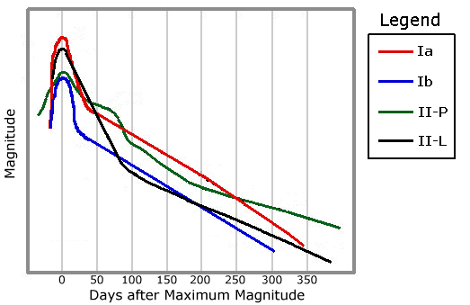
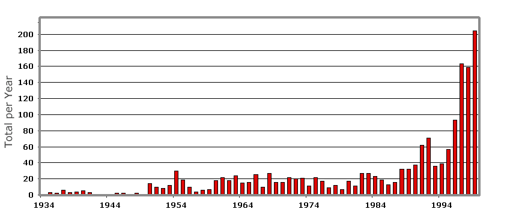

Supernovae, Supernova Remnants and Young Earth Creationism FAQ
by Dave Moore
Other Links:
|
Contents
1. Introduction
2. What are Supernovae?
3. What are the different types of
Supernovae?
3.1 Type I Supernovae
3.1 Type II Supernovae
4. Examples of Supernovae
4.1 Past Supernovae
4.2 Potential Supernovae
Candidates
5. What are Supernova Remnants?
5.1 The Life Cycle of a
Supernova Remnant
6. What are the different types of Supernova
Remnants?
7. Examples of Supernova Remnants
8. Supernovae and Us
8.1 Could our Sun turn into a
Supernova?
8.2 What would happen if a
Supernova occurred near to Earth?
8.3 Is it true that the Earth
wouldn't exist if it weren't for Supernovae?
9. What are Hypernovae?
10. Are Supernova Remnants evidence of a
young Universe?
10.1 The YEC
Methodology
10.2 The Rate of Supernovae
Occurrence
10.3 Numbers of Supernova
Remnants
10.4 The Age of Supernova
Remnants
10.5 Third-Stage Supernova
Remnants
10.6 The Age of Stars
10.7 Distance to Supernovae and
Supernova Remnants
10.8 Outdated
References
10.9 Misquoting and
Paraphrasing
10.10 Conclusion
11. Notes
12. References
12.1 Books
12.2 Technical Papers
13. Credits
1. Introduction
Over the course of the last couple of centuries, scientists have amassed large amounts of evidence which have led them to conclude that the Universe is about 12-14 billion years old and was formed in the primordial event that scientists now call the Big Bang.
However, in the last fifty years, an offshoot of Fundamentalist Christianity has grown up (mainly in, but not limited to, the US) called Young Earth Creationism. Adherents, called Young Earth Creationists (YECs), vehemently reject most of modern science, on the basis that it contradicts their own version of Christianity, which is based on a strict literal interpretation of the Bible (and in particular, the early chapters of Genesis). Perhaps their most strident (and famous) opposition is to Darwin's Theory of Evolution.
YECs believe that the Universe, and therefore the Earth and all on it, including Humanity, were created by the Biblical God, Yahweh, in only six days approximately 6,000 years ago.
While the majority of YECs are involved in trying to refute the findings of modern science in biology and geology, a few look to astronomy and cosmology to support their beliefs. One of their approaches deals with supernova remnants, the remains of the exploding stars known as supernovae. YECs make two claims regarding supernova remnants:
- There are not enough supernova remnants observed in our Galaxy to support an ancient Universe - the numbers observed actually are indicative of a young Universe.
- There are no ancient supernova remnants thus the Universe is actually young.
- Sections 2 to 4 provide a general introduction to supernovae, along with a detailed description of what actually happens in a supernova, and also some examples of past supernovae.
- Sections 5 to 7 provide information on supernova remnants, the by-products of supernovae. Once again, examples of supernova remnants are provided.
- Section 8 looks into the relationship between supernovae and us, and the dangers to the Earth posed by supernovae.
- Section 9 dives briefly into the strange world of the phenomena known as hypernovae.
- Section 10 deals with the assertions of the YECs.
- Sections 11 to 13 detail notes, references and other materials used in preparing the FAQ.
2. What are Supernovae?
supernova: a star that explodes and becomes extremely luminous in the process
That's it. Literally, a supernova is an exploding star. The star explodes in a massive explosion, resulting in an extremely bright and short-lived object that emits vast amounts of energy, typically as much as an entire galaxy. As well as visible light (i.e. optical radiation), supernovae emit huge amounts of various types of radiation: X-rays, ultraviolet, infrared, gamma rays, neutrinos, cosmic rays and radio waves. The remains of the matter that is exploded away from the star during the supernova is known as a supernova remnant. Supernovae were first proposed as a distinct class of objects in 1934 by the astronomers Fritz Zwicky and Walter Baade.
3. What are the different types of Supernova?
The taxonomy of supernovae is quite complicated. Astronomers use observational criteria, not theoretical criteria, to type supernovae. Type 1 supernovae do not have hydrogen lines in their spectra1, but Type II do. Each Type is broken down into further subclasses, depending on their light curves (Figure 1), progenitors and location - Type I into Types 1a, 1b and 1c, and Type II into Types IIL and IIP (Cappellaro & Turatto 2000).
As with most other classifications, there are exceptions. The spectra and/or light curves of a few supernovae differ sufficiently from the standard types to lead astronomers to suggest several new subclasses (Panagia et al. 1986; van Dyk et al. 1993; Baron et al. 1995, Benetti et al. 1998; Lentz et al. 2000; Filippenko 2000; Li et al. 2000; Howell 2000).
 |
3.1 Type I Supernovae
Type Ia supernovae occur in a binary system, where one component is a white dwarf 2. The gravitational attraction of the white dwarf is so intense that it is capable of siphoning off material from its companion star (Hachisu & Kato 2001). This causes the star to exceed its limit of stability - the Chandrasekhar limit3 - causing it to go into thermonuclear instability. At this point, thermonuclear incineration of the white dwarf ensues, although how exactly this occurs is still under debate, as the physics of thermonuclear burning in the degenerate matter that makes up a white dwarf is complex and still not completely understood, although there is much research going on in this area (e.g. Woosley & Weaver 1994; Branch et al. 1995; Hillebrandt & Niemeyer 2000; Hillebrandt et al. 2000; Branch 2000; Ghezzi et al. 2001). Whatever the exact mechanics, however, the result is a massive explosion that produces an extremely massive outburst of energy, some 1051 ergs, with an absolute magnitude of about -19.5 (Sandage et al. 1996; Saha et al. 1996)4. The star literally blows itself to bits, leaving nothing behind except a rapidly expanding remnant.
Type Ib and Ic supernovae are actually similar to Type II supernovae (they were named before astronomers really understood what they were). They occur as a giant star of about 20 solar masses evolves and loses its hydrogen envelope (the outer layers of the star) via either stellar winds (the extremely weak flow of charged particles, consisting of mainly protons and electrons, which stream from a star's outmost layer into interplanetary space) or to a binary companion (van Dyk et al. 1996); then the exposed helium core explodes. As with Type II supernovae, the explosion is triggered by the collapse of its iron core. Type Ib and Ic supernovae are (slightly) less spectacular than Type Ia supernovae. Type Ib supernovae have strong Helium lines in their spectra, whereas Type Ic supernovae have weak or no Helium lines in their spectra (Baron et al. 1996). The relationship between Type Ib and Ic supernovae and Type II supernovae is such that several Type II supernovae have been observed to have transformed into Type Ib/Ic supernovae (e.g. Finn et al. 1995; Matheson et al. 2001).
The standard Type Ia supernovae light curve shows an early peak followed by a sharp drop, then a linear decline after 50 days at a rate of 0.015 magnitudes per day. The light curves of Type Ib supernovae, though being dimmer than a Type Ia at maximum, show a similar sharp drop. However, the subsequent exponential decline differs markedly from that of Type Ia supernova, with the rate of decline less for Type Ib supernova than Type Ia, being about 0.010 magnitudes per day. The light curves of Type Ic supernovae are identical to that of Type Ib supernovae.
3.2 Type II Supernovae
These occur when a high mass star (greater than approximately 7.6 solar masses) no longer has enough fuel for the fusion process5 in the core of the star to create the outward pressure which combats the inward gravitational pull of the star's great mass. When this occurs, the star will swell into a red supergiant... at least on the outside. On the inside, the core yields to gravity and begins shrinking. As it shrinks, it grows progressively hotter and denser. This allows a new series of nuclear reactions to occur, forming new elements which in turn fuse to form further new elements, and so on. This allows the star to temporarily keep on shining (Table 1). All these differing reactions take increasingly shorter periods of time, and release progressively less amounts of energy6. As these new reactions take place, the structure of the star becomes similar to an onion - there are shells of progressively less heavy chemical elements surrounding the core.
|
Nuclear
Fuel
|
Process by
which reaction occurs
|
Threshold
(106 K)
|
Products
|
Energy Released
per Nucleon (MeV)
|
|---|---|---|---|---|
|
Hydrogen
|
p-p
|
4
|
Helium
|
6.55
|
|
Hydrogen
|
CNO
|
15
|
Helium
|
6.25
|
|
Helium
|
3-alpha
|
100
|
Carbon,
Oxygen
|
0.61
|
|
Carbon
|
C + C
|
600
|
Oxygen, Neon,
Sodium, Magnesium
|
0.54
|
|
Oxygen
|
O + O
|
1000
|
Magnesium,
Silicon, Sulphur, Phosphorus
|
0.30
|
|
Silicon
|
Nuc.
eq.
|
3000
|
Cobalt, Nickel,
Iron
|
<
0.18
|
Once the star fuses silicon into iron it hits a major snag. As can be seen, the above reactions create energy (an exothermic reaction). But to convert iron into heavier elements requires energy (an endothermic reaction, which requires approximately 2 MeV per Nucleon). Thus, fusion halts. At the very high temperatures now present in the core of the star (much greater than 109 K), a process known as photodisintegration7 occurs. Due to the loss of energy that occurs due to photodisintegration, the core starts to rapidly collapse. Different parts of the core collapse at different rates, with the result that the inner core decouples from the outer core, leaving it behind. During the collapse, speeds can reach 7,000 km s-1 in the outer core, and within about one second, a volume the size of Earth has been compressed down to a radius of 50 kilometres. As a result the rest of the star is left in the precarious position of being almost suspended above the catastrophically collapsing core. This collapse of the inner iron core continues until the density there exceeds approximately 8 x 1017 kg m-3. At this point, the material that now makes up the inner core stiffens (as a result of the nuclei of the atoms present becoming repelled by each other), with the result that the inner core now rebounds somewhat, sending pressure waves outwards into the infalling material of the outer core. These pressure waves, when they reach the local speed of sound, form a shock wave that starts moving outwards.
As the shock wave propagates outwards, it encounters the falling inner iron core. The extremely high temperatures that occur as a result of this cause further photodisintegration, robbing the shock of most of its energy8. If what's left of the iron core is not too massive (less than 1.2 solar masses), the shock will fight its way through the rest of the outer core - which takes about twenty milliseconds, and collide with the remainder of the outer layers of the star. On the other hand, if the iron core is massive enough, the shock stalls, becoming nearly stationary, with infalling material now accreting onto it. At this point, the neutrinos now streaming from the core (due to the conversion of the iron core into essentially a neutron core) superheat the material beneath the shock wave; the resulting plumes of hot material push the shock wave outwards and allow it to continue its march towards the surface, driving all before it (Janka 2001). As the shock encounters material in the star's outer layers, the material is heated, fusing to form new elements and radioactive isotopes (Meyer et al. 1995; Thielemann et al. 1996). The shock then propels the various outer layers of the star out into space, leaving the inner core behind. The total energy in the expanding material is in the order of 1051 ergs (or less). Vast amounts of photons are released, resulting in a spectacular optical display, the equivalent of 109 suns, giving an absolute magnitude of about -18. Due to the radioactive decay of heavy elements produced in the explosion (Mochizuki & Kumagai 1998; Hernanz 2000; Wanajo et al. 2001), it then starts to slowly fade, at rate of approximately six to eight magnitudes each year. Type II supernovae are not as luminous as Type Ia supernovae, by a factor of at least three. The mechanics of this type of supernovae are dealt with in detail by Bethe (1993), Wallerstein et al. (1997), Mezzacappa (2000) and Liebendoerfer et al. (2001).
If the mass of the core remnant is beneath about three solar masses, it will become a neutron star9 (rapidly rotating neutron stars are known as pulsars10). If it exceeds about three solar masses, it continues to contract. The gravitational field of the collapsing star is so powerful that neither matter nor light can escape it. The "star" then collapses to a black hole (Balberg & Shapiro 2001), a singularity or point of zero volume and infinite density, hidden by an event horizon at a distance called the Schwarzschild radius11. Bodies crossing the event horizon, or a beam of light directed at such an object, would seemingly just disappear - pulled into a "bottomless pit". In either case, the creation of these rather exotic objects is accompanied by a tremndous production of neutrinos, the majority of which escape into space with a total energy approaching 3 x 1053 ergs12.
The majority of Type II supernovae are split into II-L (linear) or II-P (plateau) subclasses, depending on their light curves - Type II-P display a plateau soon after maximum luminosity.
4. Examples of Supernovae
4.1 Past Supernovae
Since the earliest days of mankind looking up into the skies, we have saw many bright points of light in the sky which appeared suddenly and then slowly faded away over the course of many months. Most of these "guest-stars", as the ancient Chinese called them, were novae of various sorts, but some were genuine supernovae. The most reliable records come from Asia, where Korean, Japanese and Chinese astronomers kept suprisingly accurate records dating back as far as 1400 BC - Wang (1986) reported that there were 90 probable novae and supernovae listed in Chinese records between 1400 BC and 1700 AD. In Europe, on the other hand, the earliest known observation of what we now know to be a supernovae was not until the 11th century AD. As a result of intensive study of these records, and later reports by European astronomers like Tycho and Kepler, astronomers are now aware of quite a few Galactic supernovae having occurred in the last couple of thousand years (Table 2)13.
|
Year
|
Peak
Magnitude
|
Constellation
|
Distance (light
years)
|
|---|---|---|---|
|
A.D. 18514
|
-6
|
Centaurus
|
4,500
|
|
386
|
-3
|
Scorpius
|
16,30015
|
|
1006
|
-10
|
Lupus
|
4,600
|
|
1054
|
-6
|
Taurus
|
6,500
|
|
1181
|
-1
|
Cassiopeia
|
8,500
|
|
1572
|
-4
|
Cassiopeia
|
10,000
|
|
1604
|
-3
|
Ophiuchus
|
14,300
|
|
167116
|
6?
|
Cassiopeia
|
9,100
|
The first extragalactic supernova ever discovered was SN 1885A near the nucleus of M31 (the famous "Andromeda Galaxy") on 20 August 1885. SN 1885A had an apparent visual magnitude of 5.85 - it would have been just barely visible to the naked eye had not the glow from M31 overwhelmed it (de Vaucouleurs & Corwin 1985).
Probably the most famous extragalactic supernova was observed on the 24th February 1987 in the Large Magellanic Cloud A blue supergiant star (of about 20 solar masses) called Sanduleak -69 202 (its previous apparent visual magnitude was a lowly 10.2) exploded in a burst of light visible to the naked eye (when discovered on a photographic plate by the astronomer Ian Shelton of the University of Toronto at the Las Campanas Observatory in Chile, it was magnitude 4.5 - it later peaked at magnitude 2.8 before fading slowly over time (Shelton 1993)) - thus it was a Type II supernova. It was designated SN 1987A17. In the subsequent years, a bright supernova remnant was seen to form around the star in the form of an expanding shock wave. Only now, years later, is the shock wave reaching rings of previously existing gas surrounding the now dead star (Chu 2000)18. This is causing the knots of gas to glow brightly. There are many images of SN 1987A available on the WWW. Perhaps the definitive review of SN 1987A is Arnett et al. (1989), although this does not cover more recent developments.
SN 1987A was extremely important to astronomers as it was the first supernova which astronomers could study in great detail with modern astronomical instruments. It confirmed a whole host of predictions that astronomers had made regarding supernovae, including:
- the production of radioactive isotopes, for example 56Ni and 57Ni and their subsequent decay to 57,56Co and 57,56Fe, or 44Ti which decays to 44Sc and then to 44Ca, which are largely responsible for the shape of the light curves of supernovae (Arnett et al. 1989; Li et al. 1993; Knodlseder 2000; Lundqvist et al. 2001)
- the production of neutrinos (Bionta et al. 1987; Hirata et al. 1987; Arnett 1988; Burrows 1988; Arnett et al. 1989)
 |
4.2 Potential Supernovae Candidates
The three nearest candidates for supernovae sometime in the near future (astronomically speaking) are all nearby (again, in astronomical terms) red giants: Betelgeuse (in Orion) at 430 light years, Antares (in Scorpius) at 600 light years, and Rasalgethi (in Hercules) which lies 380 light years from Earth. These will all be Type II supernova. There is a closer red giant - the star Scheat in Pegasus, this is 200 light years away and although this is currently a red giant, the progenitor star is almost certainly not large enough to go supernovae, instead, the outer layers will slowly drift off into space forming a planetary nebula, and leaving a white dwarf behind.
However, it is more likely that the next Type II supernova in our Galaxy might either be the highly evolved orange supergiant HD 179821 (Jura et al. 2001) or the blue supergiant Sher 25. Even though both stars are extremely luminous, they lie at considerable distances from Earth, and thus are not visible to the unaided eye.
Sher 25 has an age of about three million years, but has a mass of about 120 solar masses, which makes it one of the most massive stars ever observed. As it dies, it is blowing parts of its own outer envelope away at speeds of 20-83 km s-1. As with Sanduleak -69 202, a bubble of gas has formed surrounding the star, which are seen as filaments and a ring shaped structure (Petersen 1999). Indeed, both the star and the surrounding material resemble Sanduleak -69 202 closely, although there are some minor differences, most probably due to differences in the environment surrounding the star (Brandner et al. 1997b). The gases and dust around the star are nitrogen enhanced - the sign of an evolved, very hot star rapidly burning through its hydrogen and helium and forming other elements in the process (Brandner et al. 1997a). Perhaps in a few tens of thousands of years, or maybe even tomorrow, Sher 25 will explode like Sanduleak -69 202, and provide another spectacular display of cosmic fireworks.
Recently, astronomers have suggested that the binary star KPD 1930 + 2752 is a future candidate for a future Type Ia supernova event . The primary star in this system is a subdwarf-B star, and it has an unseen companion star that is almost certainly a white dwarf. The orbital period is only 2 hours 17 minutes. The total mass of the system is 1.47 Solar Masses, above the Chandrasekhar limit. Maxted et al. (2000) proposed that the binary will merge within approximately 200 million years due to orbital shrinkage and the evolutionary expansion of the primary), and when this happens, because of accretion of helium and other elements heavier than hydrogen onto the white dwarf, a Type Ia supernova would occur. Some other astronomers have disputed this scenario, claiming that because the B-star would form a white dwarf before merging with its companion, the total mass of the system would be beneath the Chandrasekhar limit , thus no Type 1a supernovae would occur (Ergma et al. 2001).
It has also been determined that supernovae can be responsible for the production of runaway stars (or at least a proportion of them). These are stars that were originally part of a multiple star system. Sometime in the past, one of their companions went supernovae, and the force of the blast pushed the star off into space at a very high velocity (Blaauw 1961; Hills 1983; Stone 1991; Kaper et al. 1997; Hoogerwerf et al. 2000, 2001).
5. What are Supernova Remnants?
A supernova remnant (usually abbreviated to SNR) is the remains of the matter that is exploded away from a star when it goes supernovae. This ejection of matter is much more violent than occurs in the planetary nebula that mark the end of a low mass star, giving expansion speeds of 1000-10,000 km s-1. The ejected matter sweeps up surrounding gas and dust as it expands producing a shock wave that excites and ionises the gas, which results in the production of X-rays, and radio waves in the form of synchrotron radiation. This plasma may reach temperatures of 1,000-1,000,000 K, but with densities of only about a million particles per cubic metre. Gradually, the expansion rate slows down, seeding the local neighbourhood with heavy elements, but not before the remnant occupies an area of space dozens or hundreds of light years in diameter.
5.1 The Life Cycle of a Supernova Remnant
In the classical model of SNR evolution (Woltjer 1972; Gull 1973; Chevalier 1977), there are four stages or phases:
- In the first phase, known as free expansion, the front of the expansion is formed from the shock wave interacting with the ambient interstellar medium (ISM). This phase is characterised by constant temperature within the remnant and constant expansion velocity of the shell. This phase can last anywhere from 90 years to over 300 years.
- During the second phase, known as the Sedov or Adiabatic Phase, the remnant material slowly begins to decelerate and cool. In this phase, the main shell of the remnant is unstable, and the remnant's ejecta becomes mixed up with the gas that was just shocked by the initial shock wave. This mixing also enhances the magnetic field inside the remnant shell. This phase can last anywhere from 100-100,000 years.
- The third phase, the Snowplough or Radiative phase, begins after the shell has cooled down to about 1,000,000K, so the shell can more efficiently radiate energy. This, in turn, cools the shell faster and thus making it shrink and become denser. This makes it cool faster still. Because of this snowball effect, the remnant quickly develops a thin shell and radiates most of its energy away as light. The velocity now decreases fairly rapidly. Outward expansion stops and the remnant starts to collapse under its own gravity. This phase can last hundreds of thousands of years.
- The fourth phase, known as Dispersal. Here the shell breaks up when the velocity of the "snowplough" becomes subsonic, and what's left of the remnant dissipates into the ISM.
- The ISM in which supernovae occur is rarely isotropic or of a uniform consistency and density, which leads to asymmetry and differences within the remnant (Dohm-Palmer & Jones 1996; Maciejewski & Cox 1999; Slavin et al. 2000).
- If a supernova occurs in a pre-existing bubble of interstellar material surrounded by a massive shell of gas then the Sedov phase will not necessarily occur (Wheeler et al. 1980; Franco et al. 1991; Franco 1994; Gvaramadze 2000), indeed, the SNR may not be detectable at all in this scenario unless it hits the walls of the shell (Fich 1986; Koo & Heiles 1995; Chu 1997).
- If the density of the medium in which the SNR is located is low enough, it is possible for the SNR to finish its life by merging with the ISM before cooling becomes important (Asvarov 2000).
- Different stages can occur simultaneously in different locations within a single remnant (Cioffi et al. 1988; Tenorio-Tagle et al. 1990; Franco et al. 1994; Jones et al. 1998; Asvarov 2000; Bykov et al. 2000; Reynoso & Mangum 2001).
- If the ISM is strongly magnetized, then the evolution of the SNR will differ in terms of the length of the various phases and the overall shape of the remnant (Insertis & Rees 1991).
6. What are the different types of Supernova Remnants?
There are three generally accepted types of SNRs. Note that the categories are not set in stone - SNRs have been observed in the process of gradually transforming from one type to another (Sakhibov & Smirnov 1982; Lazendic et al. 2000). The three types are:
- Shell-type remnants: As the shock wave from the supernova explosion ploughs through space, it heats and stirs up any interstellar material it encounters, thus producing a big shell of hot material in space. A ring like structure in this type of remnant is seen because at the edge of the shell there is more hot gas in our line of sight than in the middle. Astronomers call this phenomenon limb brightening. The vast majority of SNRs are of this type.
- Crab-like remnants: These remnants, also known as "plerions" (a term first suggested by Weiler & Panagia (1978), and from the Greek word meaning "full") are similar to the Crab Nebula. They are similar to shell-type remnants, except that they contain a pulsar in the middle that blows out jets of very fast moving material. These remnants look more like a "blob" than a "ring."
- Composite Remnants: These remnants are a cross between the shell-type remnants and crab-like remnants. They appear shell-like, crab-like or both depending on what part of the electromagnetic spectrum one is observing them in. There are two kinds of composite remnants -- thermal and plerionic. Thermal composites appear shell-type in the radio waveband (synchrotron radiation). In X-ray wavelengths, however, they appear crab-like, but unlike the true crab-like remnants their X-ray spectra have spectral lines, indicative of hot gas. Plerionic composites appear crab-like in both radio and X-ray wavebands, however they also have shells. Their X-ray spectra in the centre do not show spectral lines, but the X-ray spectra near the shell do have spectral lines.
Rho & Petre (1998) proposed a fourth class of SNRs - the so-called "mixed-morphology SNRs". These remnants are classified as shell-type remnants at radio wavelengths, but the X-ray morphology is centrally peaked. In addition, the X-ray emission is thermal which comes from the ISM, not the ejecta making up the SNR. And finally, there is no prominent, central, compact source in radio or X-ray bands (i.e. there is no pulsar).
7. Examples of Supernova Remnants
Some of the more famous SNRs (easily visible in small telescopes) include:
- The Crab Nebula in Taurus,
- The Veil Nebula in Cygnus,
- The Vela SNR in Vela,
- The Puppis A SNR in Puppis.
There are many galleries of SNR images on the WWW - perhaps the two most extensive are the ROSAT X-ray Satellite Gallery and the Chandra X-ray Satellite Gallery. According to Green (2000), there are 225 confirmed SNRs in our Galaxy, with another 61 possible or probable remnants, with more are being discovered all the time (e.g. Bhatnagar 2000; Crawford et al. 2000; Combi et al. 2001; McClure-Griffiths et al. 2001). There are hundreds known in other galaxies (e.g. Danziger et al. 1979; van den Bergh 1983; Peimbert et al. 1988; Long et al. 1990; Braun & Walterbos 1993; Gordon et al. 1993; Muxlow et al. 1994; Yang et al. 1994; Huang et al. 1994; Cowan et al. 1994; Magnier et al. 1995; Matonick & Fesen 1997; Dunne et al. 2000; Schlegel et al. 2000; Rosado et al. 2001). There are nine known plerions in our Galaxy, and twenty-three known Composite remnants, the rest are Shell-Type remnants (Green 2000), although the proportion of plerions is expected to rise in the future as SNRs which are currently classified as Shell-Type or Composite are examined more closely (Gaensler 2000). Since the "mixed-morphology" category was proposed, some astronomers have been re-examining existing SNRs with a view to recategorising them as mixed-morphology SNRs, so far about nine have been identified (Yoshita et al. 2001).
8. Supernovae and Us
8.1 Could our Sun turn into a supernova?
Relax, the answer is an emphatic no! Our sun is nowhere near massive enough to become a Type II supernova and there's no white dwarf companion to become a Type Ia supernova. Besides, it will take another five billion years before our sun's supply of hydrogen is depleted. At that time it will begin its dying process and eventually become a white dwarf with a surrounding shell of material much like the Ring Nebula (M57) in the constellation of Lyra, i.e. a planetary nebulae. This is still small consolation for us on Earth however, as in another billion years or so the Sun will have increased in luminosity so much that the Earth will likely become totally uninhabitable.
8.2 What would happen if a Supernova occurred near to Earth?
In short, life on Earth would be in big trouble. Depending on the distance and the type, the massive amounts of radiation emitted by supernovae could mean possibly all or most of the life on Earth would be fried. From an article by Michael Richmond on the risks to Earth from nearby SNRs:
I suspect that a Type II explosion must be within a few parsecs of the Earth, certainly less than 10 parsecs (32.6 light years), to pose a danger to life on Earth. I suspect that a Type Ia explosion, due to the larger amount of high energy radiation, could be several times farther away. My guess is that the X-ray and gamma ray radiation are the most important at large distances.
Interestingly, there is a possibility that a supernova exploded close to earth (within 100 light years) about five million years ago (Ellis et al. 1996; Fields & Ellis 1999). Could this have caused an extinction event? Quite possibly. Was there one that correlates to this supernova? Probably not19.
There is also some evidence of another supernova occurring within 600 light years of the Sun within the last couple of million years and which was responsible for the nearby shell of gas known as the North Polar Spur (Cruddace et al. 1976; Hayakawa et al. 1977; Davelaar et al. 1980; Heiles et al. 1980; Egger & Aschenbach 1995), although there are alternative non-supernova explanations (Sofue 1977). There are other similar large shells of gas in the general Galactic vicinity (Nousek et al. 1981).
The famous Geminga pulsar (aka 2CG195+4), which lies close to the Crab Nebula in the sky, has also been proposed as the remains of a supernova that occurred 300,000 years ago. Gehrels & Chen (1993) proposed that this supernova is the cause of the Local Bubble20, whereas Cunha & Smith (1996) proposed that the supernova was the cause of the loop of gas surrounding the star Lambda Orionis in the constellation of Orion, again, roughly 300,000 years ago. Innes & Hartquist (1984) also proposed that the Local Bubble was the result of a past supernova, whereas Smith & Cox (1998, 2001) have suggested that instead of being the result of one supernova, the Local Bubble is the result of repeated supernovae.
Incidentally, Geminga lies approximately 510 light years from Earth (Caraveo et al. 1996a; Caraveo et al. 1996b). Although it was discovered in 1975 as a source of high-energy gamma-rays (Thompson et al. 1977; Bennett et al. 1977), it was not until 1992 that astronomers worked out what it actually was (Bertsch et al. 1992; Halpern & Holt 1992). This is reflected in its name - "Geminga" is Milanese for "That which does not exist".
As a brief aside, the Old Earth Creationist Hugh Ross21, has stated:
According to Genesis 5 and 6, one of the many changes God decreed at the time of the Genesis Flood was the shortening of human lifespans from an average of 900+ years down to a maximum of about 120 years. Besides protecting us from intensification of evil, this change, which apparently involved a reprograming of our cells, also protects us from certain types of cancer. The change also involved either the removal of some sort of pre-Flood radiation shield or, more likely, an increase in the amount of cosmic radiation showering the Earth.
He identifies the supernova responsible for the Vela SNR as being one possible cause of this change of life span. However, on the assumption that such a change in human lifespans did take place as reported in Genesis, there are still two major problems with this claim:
- The Vela supernova was between 800 and 1,600 light years away (Gvaramadze 2001a)- at this distance the radiation hitting the Earth from the supernova itself is negligible (about the same as several hours normal sunshine at the surface of the Earth), mainly due to distance and the protective effects of the Earth's atmosphere22.
- In any case, such a dose of radiation as Ross proposes would have left traces of isotopes in various sediment layers - no such traces in these layers have been found.
In short, there is no evidence to support this claim, and plenty of evidence against it.
8.3 Is it true that the Earth wouldn't exist if it weren't for Supernovae?
The Big Bang produced very little but hydrogen and helium, with some lithium (Thielemann et al. 2001). Various other elements (heavier than carbon but lighter than iron) are produced by fusion in the red giant stage of stars (Table 3). Elements heavier than iron get produced mainly in supernovae, specifically in the explosive nuclear burning that takes place either during the phase where the shock wave that results from the collapse of the star's core encounters the outer layers of the star (for Types Ib, Ic and II supernovae), or in the general nuclear fireball that Type Ia supernova become. In the aftermath of a supernova event, the local ISM is saturated with these heavy elements. The supernovae and the resulting blast wave heat and stir up the ISM. For stars that don't go supernova, most of their heavy elements get locked up in the white dwarf that they end up as These elements are slowly distributed through the stellar wind and other forms of mass loss (Vink et al. 2001).
| Atomic Number |
Element
|
Abundance by
Number (Hydrogen = 1.000)
|
Produced Mostly
by
|
Ejected into
our Galaxy by
|
|---|---|---|---|---|
|
1
|
Hydrogen
|
1.00000
|
Big
Bang
|
Big
Bang
|
|
2
|
Helium
|
0.09700
|
Big
Bang
|
Big
Bang
|
|
8
|
Oxygen
|
0.00085
|
Helium burning in
high mass stars
|
Type Ib, Ic, and
II Supernovae
|
|
6
|
Carbon
|
0.00036
|
Helium burning in
red giants and high mass star
|
Planetary nebulae
and Type Ib, Ic, and II Supernovae
|
|
10
|
Neon
|
0.00012
|
Carbon burning in
high mass stars
|
Type Ib, Ic, and
II Supernovae
|
|
7
|
Nitrogen
|
0.00011
|
Hydrogen burning
in main sequence stars and red giants
|
Planetary
nebulae
|
|
12
|
Magnesium
|
0.00004
|
Neon burning and
carbon burning supernovae in high mass stars
|
Type Ib, Ic, and
II Supernovae
|
|
14
|
Silicon
|
0.00004
|
Oxygen burning in
high mass stars
|
Type Ib, Ic, and
II Supernovae
|
|
26
|
Iron
|
0.00003
|
Type Ia, Ib, Ic,
and II Supernovae
|
Type Ia, Ib, Ic,
and II Supernovae
|
|
16
|
Sulphur
|
0.00002
|
Oxygen burning in
high mass stars
|
Type Ib, Ic, and
II Supernovae
|
Astronomers investigating a class of meteorites known as carbonaceous chondrites (so-called becuse they contain carbon and are characterised by small inclusions or chrondules of molten material within them) have found by-products of short-lived radioactive isotopes which are produced either exclusively or mainly in supernovae (Lee et al. 1978; McCulloch & Wasserburg 1978; Clark 1979; Arnould et al. 1980; Dearborn et al. 1988; Nittler et al. 1996; Ott 1996; Timmes et al. 1996; Amari et al. 1996; Hernanz 2000). As such meteorites are thought to be primeval remnants from the time of the early solar system, approximately 4.6 billion years ago, it indicates that at some point before the formation of the solar system, a supernova occurred.
To sum up, most of the elements that make up the computer you're using to view this article, the world around you, the solar system and your body, were originally produced in a supernova (Cameron & Truran 1977; Harper 1996). As the singer Joni Mitchell put it, "We are stardust...". So the answer is yes - without these supernovae, it is very likely that us (humanity) and everything else on the Earth (and also the Earth itself) would not exist.
9. What are Hypernovae?
It has been proposed that not all massive stars successfully launch supernova events. If the core of a massive rapidly rotating progenitor collapses into a black hole and absorbs the surrounding stellar mantle without producing a neutrino driven explosion, the result is a collapsar, and the massive release of energy produced is called a hypernova. Hypernovae are typically 150-200 more massive than the Sun and explode with a total energy output of more than 1052 ergs (Nakamura et al. 2001) - many times more than the energy output of a typical supernova.
Hypernovae have been proposed as a way to explain the existence of Gamma-ray Bursts23 (Woosley 1993; Paczynski 1997; MacFadyen & Woosley 1999; MacFadyen 1999). Gamma-ray Bursts (GRBs). Astronomers have identified several hypernova-type events that appear to be linked to observed GRBs (Hansen 1999; Bloom et al. 1999; Chu et al. 1999; Filippenko 2000; Iwamoto et al. 2000).
However, other explanations for GRBs have been put forward - these include
- the merger of two neutron stars or the merger between a neutron star and a black hole (Narayan et al. 1992).
- a helium star falling into a black hole (Zhang & Fryer 2001).
- the merger of two helium stars (Belczynski et al. 2000).
- pulsars emitting relativistic jets that precess past our line of sight (Blackman et al. 1996).
- the "supranovae", in which a neutron star gravitationally implodes to a black hole (Vietri & Stella 1998).
- relativistic jets emitted in Type II supernovae (Dar 2000).
- the collapse of a supermassive star (SMS) into a supermassive black hole (SMBH) (Linke et al. 2001)
- a combination of some or all of the above (Chevalier & Li 1999).
Currently, none of the hypotheses have been confirmed to the exclusion of the others - indeed it is now apparent that there are different types of GRBs which could be caused by differing processes (Piro et al. 2000). More detailed discussion of GRBs is beyond the scope of the FAQ, but Meszaros (1999, 2001), Antonelli et al. (2000) and Piran (2001) all give good overviews of our current understanding of GRBs.
10. Are Supernova Remnants evidence of a young Universe?
All of the YEC literature on the WWW concerning supernovae and supernova remnants originates from one article written in 1994 by a Canadian, Keith Davies, entitled "Distribution of Supernova Remnants in the Galaxy". This article is part of the Creation Discovery Project. Various versions and summaries of this article appear on various other YEC web sites including Answers in Genesis (by Jonathan Sarfati), Creation in the Crossfire (by Jon Colley), Creation Online and He Comes....24. According to the Creation Science Association For Mid-America, Davies' article is based on a presentation25 he gave at the Third International Conference on Creationism in 1994.
The first line of the Creation Online article sums up the YEC argument nicely:
The results of observations done by astronomers indicate that there are not enough supernovas to justify an old galaxy. The numbers observed are consistent with a young galaxy of thousands of years old."
Sarfati elaborates further:
...a young universe model fits the data of the low number of observed SNRs. If the universe was really billions of years old, there are 7000 missing SNRs in our Galaxy.
How do the YECs arrive at this conclusion? In Davies' original article, he estimated the numbers of SNRs visible in an ancient Universe (billions of years old) and in a young Universe (thousands of years old), and compared both values with the actual number of observed SNRs (Table 4). He used the following methodology:
- Assume a rate of supernovae occurrence in our Galaxy of one every 25 years.
- Assume that the first stage of SNR expansion ends after 317 years, the second after 120,000 years and the third after a million years.
- Due to radio telescope observational limitations, assume that only 19% of first-stage SNRs, 47% of second-stage SNRs and 14% of third-stage SNRs are observable.
- Dividing the ages of the various states by the rate of supernovae occurrence, work out the numbers of SNRs of each type visible if the universe was ancient.
- Calculate the numbers of SNRs of each type visible if the universe was only 7,000 years old.
- Compare the two results to the actual number of observed SNRs.
| Supernova Remnant Stage |
Number of
predicted observable SNRs if our Galaxy was billions of
years old
|
Number of
predicted observable SNRs if our Galaxy was 7,000 years
old
|
Number of SNRs
actually observed
|
|---|---|---|---|
|
First
|
2
|
2
|
5
|
|
Second
|
2256
|
268
|
200
|
|
Third
|
5033
|
0
|
0
|
Do the claims of Davies and others stand up to scrutiny? As it happens, not very well.
10.1 The YEC Methodology
Davies claims that:
The number of Supernova Remnants (SNRs) observable in the Galaxy is consistent with the number expected to be formed in a Universe that is 7,000 years old.
However, using Davies' own methodology, the actual number of observable SNRs in our Galaxy (225 from Green (2000)) gives a value of 11,970 years, not 7,000 years. The 11,970 is the lowest possible value for the age of the Universe as derived from his methodology. Yet a strict reading of the lineages in Genesis gives the date of creation as being 4004 BC, about 6,000 years ago (as famously calculated by Archbishop Ussher of Armagh in the 17th century).
His calculations are repeated here, using his values (for convenience, any fractions are rounded to the nearest whole number - it makes very little difference to the results):
- Number of first-stage SNRs in total = 317 (length of first stage of an SNR's lifetime) / 25 = 13. Number of observable first-stage SNRs is thus 19% of 13 = 2. This figure is the same for both an old universe and a young universe.
- Number of second-stage SNRs in total with an old universe = 119,683 (length of 2nd stage of an SNR's lifetime) / 25 = 4,787. With a young universe = 6,683 / 25 = 267. Number of observable first-stage SNRs with an old universe thus 47% of 4,800, or 2,250. Number of observable second-stage SNRs with a young universe = 47% of 267 = 126.
- Number of third-stage SNRs in total with an old universe = 880317 (length of 3rd stage of an SNR's lifetime) / 25 = 35213. With a young universe = 0 / 25 = 0. Number of observable third-stage SNRs with an old universe thus 14% of 35213, or 4,930. Number of observable third-stage SNRs with a young universe = 14% of 0 = 0.
There is a mathematical error in Davies' calculation. Surely if only 47% of second stage SNRs are visible, then the number of visible SNRs in a young universe is not 267/268 but 47% of this = 126? But to quote Davies:
Total [number] of Second Stage SNRs expected to be observed under a 7,000 year old Universe with t* =25 approx. 268.
In fairness to Davies, this is most likely a simple mathematical mistake, but both Sarfati and the author(s) of the Creation Online article correct this error, and give the value of 126 for visible second-stage SNRs, without telling the reader that they have done so, and without pointing out the error in Davies' original article. The other articles propagate the erroneous value of 268.
Davies devotes a large part of his article to calculating the percentages of SNRs at different stages in their lifetimes that should be visible. He gets the results of 19%, 47% and 14% for first, second and third stage SNRs respectively). However, these figures are wrong. One of the components he uses in the calculation is the relationship known as Sigma-D (obtained from Ilovaisky & Lequeux 1972a), i.e. the relationship between the surface brightness at a specific radio frequency and the linear diameter of an SNR. Although it can be used for determining distances to SNRs (Goebel et al. 1981; Huang & Thaddeus 1985; Case & Bhattacharya 1998), it only works for shell-type SNRs that have the same supernova explosion energy and mechanism, and are evolving in identical environments, whereas Davies assumes that it holds for all SNRs. More information on measuring distances to SNRs is given in Section 10.7. As Green (1991) states,
It is not possible to quote a single surface-brightness completeness limit for current catalogs of SNRs, not only because the background emission varies in different regions of the Galactic plane but also because different regions have been surveyed with different instruments.
Davies also uses the radio observational limitations from Ilovaisky & Lequeux (1972a) to give proportions of SNRs in various stages of evolution (19%, 47% and 14%). There are many problems with Davies' approach:
- Davies' proportions are gross simplifications - it is simply not possible to work out accurate figures for the proportions of SNRs visible at various stages in their lifetimes, as there are too many external factors involved (see Section 10.3).
- Others (e.g. Kodaira 1974; Vettolani & Zamorani 1977; Leahy & Wu 1989) have updated and corrected Ilovaisky & Lequex's original findings - corrections Davies has not taken into consideration, despite their papers being published well before 1994.
- Diameters of SNRs are crucial to Davies' calculations. But to calculate the diameter of a SNR, the distance must be known with accuracy. Davies gives the impression that the diameters and distances of Galactic SNRs that he uses are accurately known, when this is not the case (see Section 10.7 and Green (1984, 1991) for more details).
- In radio astronomy, flux density is defined as power received per unit area per unit frequency. The unit of flux density is the Jansky (Jy) and is equivalent to 10-26 W Hz-1 m-2. The amount of radiation in the radio spectrum emitted by a SNR is measured in Jy, and a radio telescope with a low flux density limit is much more sensitive to SNRs with low flux densities. Davies has limited himself to SNRs with a flux density of greater than 10 Jy. Out of the 225 confirmed SNRs in our galaxy, only 90 (40%) have flux densities of 10 Jy or more. When Davies wrote his article, the numbers of SNRs with flux densities of 10 Jy or more was 102 out of 176 in total. The other remnants, 74 in 1991 and 135 today, Davies completely ignores. These SNRs are effectively dimmer and harder to detect, and thus are probably either further away or larger (and thus older). By ignoring these, Davies is claiming that he finds no old remnants, but he is doing so after eliminating large numbers of possible old remnants from his calculations!
10.2 Rate of Supernovae Occurrence
The main source for Davies' value of 25 years for the rate of supernova occurrence in our Galaxy is an estimate made in 1970 by the Swiss astronomer Gustav Tammann. The value Tammann gave was 26 ± 10 years, calculated by comparing our Galaxy to other similar galaxies (in terms of size and luminosity) and working out the rate of supernovae from observing them (Tammann 1970). Poveda & Woltjer (1968) gave a rough estimate of 60 years, whereas Chai & van den Bergh (1970) estimated 100 years, and Ilovaisky & Lequeux (1972b) gave 50 ± 25 years.
In 1994, Tammann revised his 1970 estimate for the rate of occurrence of supernovae in our own Galaxy to 40 ±10 years (Tammann et al. 1994). Cappellaro et al. (1996) suggested that for our Galaxy there should be 4 ± 1 Type Ia, 2 ± 1 Type Ib/c and 12 ± 6 Type II observable supernovae per millennium, which works out at rate roughly half that of Tammann's 1970 value. Weiler & Sramek (1988) conclude that the average interval between supernovae in our Galaxy is between 20 and 50 years and van den Bergh & Tammann (1991) and Turatto (1999) both give estimates in reasonable agreement with this. The values given in Carroll & Ostlie's Introduction to Modern Astrophysics are 36 years for Type I supernovae and 44 years for Type II supernovae. Folgheraiter et al. (1997) gives an average interval of 30 years as being "the currently accepted value".
In the 1940s, 1950s and early 1960s, astronomers found that supernovae occurred at different rates in different types of galaxies, and that the rate of supernovae in spiral galaxies is dependent on the luminosity of the galaxy involved (Tammann et al. 1994). In addition, the rate at which supernovae are observed to occur in other galaxies is dependent on the inclination of the galaxy - a lot more supernovae are detected in galaxies that lie pole-on to us (van den Bergh & McClure 1990; van den Bergh & Tammann 1991). Another determining factor in the rate of supernova occurrence is the amount of progenitor stars - either suitable binary systems (for Type I) or massive giant stars (for Type II) are required.
Dragicevich et al. (1999) have proposed that the Earth is situated favourably within our Galaxy for viewing supernovae, thus the calculated rate for supernovae occurrence is actually high compared with the rate throughout the Galaxy as a whole.
Astronomers are generally quite cautious in inferring rates of supernova occurrence from the amount of supernova remnants. Indeed, to quote from Jones et al. (1998):
People should exercise extreme caution in inferring supernovae rates from counts of mature and old SNRs.
And from van den Bergh & Tammann (1991):
Since the lifetimes of radio supernova remnants (SNRs) depend so critically on environment, it will be very difficult to derive meaningful information on supernova rates from the statistics of SNRs.
However, on balance, Davies uses an acceptable value for the rate of Galactic supernovae occurrence. Incidentally, it is thought that one supernova occurs every second in the whole Universe (Burrows 2000).
10.3 Numbers of Supernova Remnants
YECs claim that not as many SNRs are observed as would be expected in an old universe. Davies uses a value of one million years for the lower end of the typical visible lifetime of a SNR and assumes that all SNRs last this long. He gets this figure from Ilovaisky & Lequeux (1972b). However, on reading the original paper it is noticeable that this value is actually for the theoretical lifetime of the remnant, not the observable lifetime of the remnant. Why is there a difference? Quite simply, SNRs are actually hard to detect. Factors that seriously hinder our ability to detect SNRs (and which Davies almost completely ignores) are:
- SNRs can only be observed in a small proportion of our Galaxy - our view of most of the Galaxy is blocked by large amounts of dust and interstellar matter. Only some younger, radio emitting SNRs would be visible through this dust (Sramek et al. 1992; Gray 1994). This largely explains why there has been no observed Galactic supernovae in the last 300 or so years (Clark et al. 1981; Dawson & Johnson 1994; Hatano et al. 1997), even though we would have expected perhaps 5-10 to have occurred (McKee 2000).
- It is also difficult to identify much older remnants as they either have faded beyond our ability to detect them (they may have merged with the ISM), they have merged with other remnants, or they have faded into the general background "noise" (Nousek et al. 1981; Matthews et al. 1998; Braun et al. 1989; Landecker et al. 1990; Normandeau et al. 2000). Younger SNRs, or SNRs which are still interacting with gas expelled by their progenitors are much more likely to be detected (Jones et al. 1998; Slavin & Cox 1992). Shull et al. (1989) carried out a statistical analysis of SNRs, and found that with isolated SNRs, less than 1% last for longer than 100,000 years, and only 20% are still intact after 50,000 years.
- The make-up of the local ISM that the supernova occurs in is critical to the observability of the resulting SNR (Dohm-Palmer & Jones 1996). SNRs in regions where the density of the ISM is low (Henning & Wendker 1975; Gaensler & Johnson 1995b) or there is little ionised gas present (Heiles et al. 1980) may not be readily visible. Indeed, it may be the case that as few as 15-20% of supernova events cause observable SNRs (Clark & Stephenson 1977; Clark 1979; Kafatos et al. 1980).
- Some young SNRs can be intrinsically faint at radio wavelengths and thus unusually difficult to detect (Gray 1994; Duncan & Green 2000).
- SNRs are obscured by and can be indistinguishable from other interstellar emission nebulae, and their spectra can be similar to powerful distant radio galaxies and quasars (White & Becker 1990; Inglis & Kitchin 1990; Caswell & Stewart 1991, 1992; Williams et al. 2000). In other words, there is a lot of clutter out there, and finding SNRs is often a tricky and difficult task. Indeed, only a minority of SNRs are visible at optical wavelengths (Long et al. 1990).
- The limits of the equipment used to detect SNRs (usually radio telescopes) impinge upon our ability to observe supernova remnants (Green 1991; Kassim 1992; Frail et al. 1994). As this gets better in the future, the numbers of SNRs detected will rise. This can be illustrated by the way astronomers have detected more and more SNRs in our own galaxy over the last few decades - in 1984, there were only 174 Galactic SNRs known, and back in 1971, only 113 (Downes 1971).
- Not all the sky has been surveyed to the same degree - there are still large areas of the sky (mainly in the southern celestial hemisphere) waiting to be surveyed with more powerful instruments (Case & Bhattacharya 1998).
However, Berkhuijsen's value is very much the exception. Most other estimates for the total number of SNRs in the Galaxy are around 1,000 (e.g. Minkowski 1964; Caswell 1970; Li et al. 1991). Leahy & Wu (1989) give a figure for the total possible number of radio observable SNRs in our Galaxy within 50,000 light years of Earth to be 485 ± 60/f1, where f1 is the completeness factor for SNR observations within 6,000 light years of the Sun (i.e. if we have only detected 75% of nearby SNRs, then the estimate is 486 / 0.75 or 648). Case & Bhattacharya (1996) gave 486 ± 42 as an upper limit, whereas Trushkin (1999) gives 300-1000 potentially detectable SNRs in our Galaxy.
YECs have also invoked the number of SNRs in the Large Magellanic Cloud to support their assertions. From Sarfati's article:
Not only that, but the predictions for the Milky Way's satellite galaxy, the Large Magellanic Cloud are also consistent with a young universe. Theory predicts 340 observable SNRs if the LMC were billions of years old, and 24 if it were 7000 years old. The number of actually observed SNRs in the LMC is 29.
The number of SNRs observed in the Large Magellanic Cloud in 1999 is actually 37 (Williams et al. 1999), although more are being discovered all the time - indeed it is recognised that, just like our own galaxy, there are many more SNRs yet to be discovered in the LMC (Milne et al. 1980; Dickel & Milne 1988; Chu & Kennicutt 1988). The discrepancy in Sarfati's figures can probably be explained by outdated references, and thus should not be counted against him.
However, both Davies and Sarfati make a more serious error. The estimate of 340 for the total number of SNRs in the LMC is from Mathewson & Clarke (1973). However, Clark & Caswell (1976), Clarke (1976) and Milne et al. (1980) all point out major problems with Mathewson & Clarke's estimate - basically, due to improved observations of SNRs in the LMC, Mathewson & Clarke's estimate is no longer valid. The true number of SNRs in the Large Magellanic Cloud is much, much lower.
Now, Davies has read at least one of these papers (the Clark & Caswell paper), thus he must be aware of the status of the Mathewson & Clarke estimate. Yet he uses this as one of the main supports of his theory, knowing that it is at the very least in serious dispute. When combined with the deliberate misquotation of the Clark & Caswell paper (detailed in Section 10.9), the only logical conclusion is that either Davies is seriously incompetent or he has deliberately set out to deceive (and Sarfati appears to have blindy copied from Davies' original paper, without verifying the original calculation).
10.4 The Age of Supernova Remnants
The other main plank of the YEC argument is the assertion that all SNRs are less than 10,000 years old. This can be best summed up by a section from Sarfati's article:
According to their [Astronomers'] model, the SNR should reach a diameter of about 300 light years after 120,000 years. So if our galaxy was billions of years old, we should be able to observe many SNRs this size. But if our galaxy is 6,000-10,000 years old, no SNRs would have had time to reach this size. So the number of observed SNRs of a particular size is an excellent test of whether the galaxy is old or young. In fact, the results are consistent with a universe thousands of years old, but are a puzzle if the universe has existed for billions of years.
Additionally, from the He Comes... article:
...And if you calculate, using the observed rates of expansion and the present radii, how long ago it was that the shell type supernovae explosions occurred, all the dates are under 10,000 years. Whereas, if the universe were really old, one would expect a distribution of ages, ranging from just a few years to over the million years that we calculate that the expected supernova remnants would still be strong enough to be detected via today's radio-telescopes.
This claim is widely propagated in YEC literature26. However, it is completely false. While one way of measuring the age of SNRs is indeed to look at the radii and the rate of expansion, and thus calculate the age, this can only be done for younger SNRs - it is not applicable to older, more evolved SNRs, the ages of which are measured in different ways. In fact, the population of observed SNRs does show a wide distribution of ages, from young ones to really ancient ones.
For example, one of the most famous SNRs, the celebrated Veil Nebula in the constellation of Cygnus is approximately 14,000 years old (Levenson et al. 1998). G89.0 + 4.7 is 19,000 years old (Leahy & Aschenbach 1996); G6.4 - 0.1 is 58,000-110,000 years old (Kaspi et al. 1993). The remnant G69.0 + 2.7 is at least 77,000 years old (Koo et al. 1990) and G166.2 + 2.5 is 150,000 years old (Kim et al. 1988). There are many other ancient remnants (Woltjer 1972; Fich 1986; Storey et al. 1992). Duncan et al. (1995) report on G279.0 + 1.1, which they estimate could be half a million years old (it is an extremely large and faint remnant). And older SNRs are not confined to our own Galaxy. The remnant SNR 0450-709 in the Large Magellanic Cloud, which is 340 x 245 light years in size, is several hundred thousand years old (Jones et al. 1998). And with newer and improved equipment and detection techniques, astronomers are finding more and more ancient SNRs. It has even been suggested that the large-scale structure known as the Origem Loop is an ancient SNR in a very advanced stage of evolution, and which is approximately a million years old (Hanbury Brown et al. 1960; Berkhuijsen 1974; Kahn 1976).
As mentioned before, as time goes by, a SNR becomes more difficult to detect, as it increases in size and the material in the remnant gets thinner and spread out more, and distorted by the ISM - Davies completely ignores this. The values typically accepted by astronomers for the average maximum visible lifetime of a SNR range from 60,000 years to upwards of 500,000 years (Cox 1972; Jones 1975; McCray & Kafatos 1987; Leahy & Wu 1989; Dorfi 1994; de Grijs et al. 2000). From Clark (1979):
...within a few tens of thousands of years most of the extended remnants which have survived to 'middle-edge' are expected to merge with the interstellar medium and be unrecognizable.
Perhaps two of the most famous pulsars are those within the Crab Nebula and the Vela SNR (Lorimer & Ramachandran 1999). Astronomers are also attempting to relate other pulsars with various SNRs . Because the age of a pulsar can generally be computed accurately27, if it can be associated with an SNR then the age of the SNR can also be calculated (Furst et al. 1993; Caraveo 1993; Gaensler & Johnson 1995b).
10.5 Third Stage Supernova Remnants
One of the most important assertions that the YECs make is that there are no third-stage, i.e. SNRs in the radiative stage Indeed, the very presence of just one third-stage SNR would completely destroy the YEC argument for a young Universe, as the amount of time a SNR takes to reach this stage is way beyond anything that the YEC time scale allows.
So, are there any actual third-stage SNRs? There have been dozens of papers published over the last several decades examining and discussing actual radiative SNRs - quite an achievement considering how, according to YECs, they don't actually exist! Despite what the YECs say, radiative SNRs do actually exist. A brief reading of the relevant literature reveals the following Galactic SNRs that are in the radiative phase (and there are others):
- G69.0 + 2.7 (Sarfi-Harb & Ogelman 1995).
- G166.2 + 2.5 (Routledge et al. 1986).
- G180.0 - 1.7 (Furst & Reich 1986).
- G189.1 + 3.0 (Oliva et al. 1999).
- G279.0 + 1.1 (Duncan et al. 1995).
- G290.1 - 0.8 (Rosado et al. 1996)28.
G55.0+0.3 is amongst the faintest SNRs known. This SNR could be just one member of a larger population of faint, old remnants that are not currently detectable at radio frequencies. If a significant fraction of SNR survive longer than 50,000 years, further imaging of the Galactic plane with high surface sensitivity and high angular resolution should reveal more old SNRs.
The most massive stars (the ones most likely to end up as Type II supernovae) are found in clusters. Thus most Type II supernovae will not have been the first one to occur in the vicinity, but more likely occur in a medium that has been disturbed by the action of previous supernovae (Chu 1997). The typical lifetime of a massive star that is likely to end in a supernova (a few 106 years) is not long enough for the ISM to backfill the cavity left over by previous supernovae (Jones et al. 1998). Single or multiple supernovae (in the latter case, in the same general vicinity) can result in the formation of a superbubble, up to hundreds of light years across over a time scale of one to twenty million years (Heiles 1984; McCray & Kafatos 1987; Oey & Clarke 1997; Ehlerova et al. 2001). There are many examples of these superbubbles both in our own Galaxy and in other galaxies (e.g. Blades et al. 1980; Fich 1986; Meaburn & Laspias 1991; Hunter 1994; Bomans & Chu 1997; McClure-Griffiths et al. 2000; Bond et al. 2001). Indeed, it is likely that the Sun is located in one of them (Hughes & Routledge 1972). Maciejewski et al. (1996) describe a structure they have named the "Aquila" supershell, which lies about 8,500 light years from Earth, with a radius of over 520 light years, which they calculate is about ten million years old, and the result of 10-100 supernovae. It contains several star-forming regions. Incidentally, there is one SNR associated with this structure, G34.7 - 0.4, with a calculated age of approximately 20,000 years (Wolszczan et al. 1991; Shelton et al. 1999).
In addition, Davies's assumption that the adiabatic phase of SNR evolution (i.e. the "second stage") always lasts 120,000 years and that the radiative phase always lasts 880,000 years is also completely wrong. As was mentioned in Section 5.1, the evolution of SNRs varies enormously.
10.6 The Ages of Stars
YECs such as Davies claim that the universe is about 6-7,000 years old. However, the life cycle of stars which turn into supernovae is of the order of a few tens of millions of years for high mass stars (Type II supernovae) and at least a billion years (and usually much, much more) for lower mass stars (Type I supernovae). The oldest known stars are approximately 12.5 billion years old (Cayrel et al. 2001; Qian & Wasserburg 2001), which is consistent with the latest estimate of the age of the Universe as a whole at about 13.5 to 14 billion years old (Lahav 2001; Ferreras et al. 2001).
Indeed, supernovae do play an important part in the birth of new stars - when a supernova explodes near a molecular gas cloud, the expansion of the shock front into the cloud can:
- accelerate relativistic particles
- heat and compress the molecular gas
- change its chemistry
- produce turbulent mixing.
The condensed clumps of interstellar gas created by this mechanism eventually end up as new stars (Assousa et al. 1977; Huang & Thaddeus 1986). The classical example of this happening is a group of stars embedded in a reflection nebula approximately 3,000 light years away in the constellation of Canis Major called CMa R1, in which there are two very young stars (Z CMa and HD 53367) which are the same age (about 300,000 years old) as an expanding ring of gas which appears to be an SNR (Herbst & Assousa 1977; Shevchenko et al. 1999). This scenario been disputed by some astronomers however as the identification of the ring of gas as an SNR isn't confirmed completely. A much stronger case for supernova induced star formation is the remnant G349.2 + 0.7 which is interacting with a larger shell of molecular gas, which is likely to be an extremely ancient (four million years old) SNR. This hypothesis is supported by the presence of IRAS 17147-3725, a clump of dust with similar characteristics to the proposed SNR, being ionised by an object with the spectral characteristics of a newly-formed star (Reynoso & Mangum 2001)
10.7 Distance to Supernovae and Supernova Remnants
How are the distances to supernovae and SNRs measured? Well, there are several methods available to astronomers. As the amount of energy released by a Type 1a supernova is quite accurately known, many astronomers have suggested that they can be useful in measuring distances in space, rather like a cosmic yardstick (Riess et al. 1996; Saha 1997; Riess et al. 1998; Perlmutter et al. 1998a; Regnault 2000). It has been discovered however, that not all Type Ia supernovae are identical and therefore not all have the same intrinsic brightness (Cappellaro et al. 1997; Filippenko & Riess 1999; Canal et al. 2000; Hatano et al. 2000; Howell et al. 2001; Howell 2001; Garnavich et al. 2001), and some astronomers have disputed the whole usage of Type Ia supernovae as standard candles (Drell et al. 2000), although others contend that the differences involved are not sufficient enough to rule out their use in measuring the universe (Gibson & Brook 2000; Gibson & Stetson 2001; Richtler et al. 2001).
The Sigma-D relationship (already referred to in Section 10.3), can be used to work out the true luminosity (and thus distance) of some shell-type SNRs. The emissions from the optical filaments at the shock front of a SNR can be examined to produce the true velocity at which they are moving at, and thus the distance can be worked out. The X-ray emission from a SNR in the Adiabatic phase can be measured, and from this, the actual diameter can be worked out, and thus the distance. There are other methods as well, including measuring the redshift of distant supernovae, locating known adjacent objects to which the distances are already known, and many more. For a detailed description of these methods, see Green (1984)29. Even though these methods cannot give us the exact distances - indeed, we don't know the exact distances to most SNRs (indeed, Green (2000) only gives distances to a quarter of galactic SNRs), all of them tell us that apart from a few close to Earth, every supernova and SNR known is more than 7,000 light years away. In fact, astronomers have been able to directly measure the distance to SN 1987A via trigonometry. It works out at about 167,000 ± 4,000 light years (Panagia et al. 1991; Panagia 1999)30. Astronomers have also have recently detected traces of supernovae billions of light years away (Perlmutter et al. 1998b, Riess et al. 1998, Riess et al. 2000). That it has taken about 167,000 years for the light from SN 1987A to reach Earth scuppers any idea of a 7,000 year old Universe.
So how do YECs respond to this? Well, it has been proposed that all the light from supposedly distant objects didn't come from those objects, but was created by Yahweh at the time of Creation in transit - in other words, those distant objects don't actually exist and are only illusions. This is an extension of the Omphalos argument (the Omphalos argument, first expounded in a book of that name by Philip Henry Gosse (1857), argues that the universe was created young but with the appearance of age). Omphalos is unfalsifiable, untestable and totally unscientific. Plus, it would relegate Yahweh to the role of a cosmic deceiver - creating objects and events that we observe (e.g. SN 1987A) which don't actually exist. Due to the obvious theological difficulties of this argument, many YECs have abandoned it (though many haven't) and proposed hypotheses based on alternate cosmologies which allow light to travel billions of light-years in a short period of time31, or a variable speed of light. Perhaps the chief exponent of this latter idea is the YEC Barry Setterfield, who has postulated that the rate of the speed of light is variable, and was much higher in the past (just after Creation), thus allowing for objects to appear farther away than they really are.
However, all the evidence is that the speed of light has not changed in this manner (Goldstein et al. 1973; Baum & Florentin-Nielsen 1976; Tubbs & Wolfe 1980; Gruber et al. 1981; Ellis et al. 2000)32. The most distant supernovae (and therefore the most ancient) show the same time scale of radioactive decay of the elements produced (taking into account the relativistic time dilation observed caused by the speed of the expansion of the Universe). This confirms that there has been no notable changes in decay rates between then and now, which is consistent with the idea of an ancient, expanding Universe of vast size (Leibundgut et al. 1996; Riess et al. 1997; Pranztos 1998; Filippenko & Riess 1999; Riess et al. 2000; Ellis & Sullivan 2000; Filippenko & Riess 2000; Turner & Riess 2001)33.
10.8 Outdated References
Even though Davies' article was written in 1994, the vast majority of his references are from the 1970s with a few going back to the 1960s, with just a few from the 1980s and 1990s. Here are a few examples:
- He uses Mathewson & Clarke's 1973 estimate for the number of SNRs in the Large Magellanic Cloud - which was subsequently questioned in 1976 and then shown to be incorrect by 1980.
- He uses Tammann's 1970 estimate for the rate of supernovae occurrence (this is slightly moot, as the more recent estimates aren't all that different)
- He refers constantly to Illovaisky & Lequeux's 1972 papers, to the exclusion of many other more recent papers which have updated and corrected this paper.
To make matters worse, the abridgment articles were written even more recently (Sarfati's was originally written in 1997), so there is really no excuse for others to repeat Davies' mistakes.
10.9 Misquoting and Paraphrasing
Davies misquotes several astronomers. For example, he quotes Cox (1986) as saying (in reference to a supposed lack of SNRs in the Large Magellanic Cloud):
The final example is the SNR population of the Large Magellanic Cloud. The observations have caused considerable surprise and loss of confidence.
However Cox was discussing possible models of supernova remnant evolution in the adiabatic phase, and the relevant paragraph from the original paper is actually:
The final example is the SNR population of the Large Magellanic Cloud. The observations (many collected in Mathewson et al. 1983) have caused considerable surprise and loss of confidence in simple models such as those in this paper.
Which is actually saying something completely different from what Davies claims that it says. He also misquotes Clark & Caswell (1976) twice. The first:
Why have the large number of expected remnants not been detected?
is quoted by Davies in such a way to make the reader think his estimate of the number of Galactic SNRs is correct. But in the original paper, this was a rhetorical question, in the context of discussing the 1973 estimate by Mathewson & Clarke that there should be 340 visible remnants in the Larger Magellanic Cloud. Clark & Caswell immediately follow this by giving several reasons why the 1973 estimate is unreliable (the Mathewson & Clarke estimate has been discussed earlier, in Section 10.3). The relevant paragraph from the original paper is:
Thus two anomalies require explanation. Why have the large number of expected remnants not been detected? Is it reasonable that E0/n should differ so greatly from our estimate for the Galaxy? Both anomalies are removed if we assumed that the N(D)-D relation has been incorrectly estimated owing to the small number of remnants (4) used.
As already mentioned in Section 10.3, Clark & Caswell's suspicion was subsequently proved to be correct. But Davies totally ignores this. The second quote from this paper that Davies uses:
The mystery of the missing supernova remnants
is actually lifted from this sentence in the original paper:
It appears that with the above explanation there is no need to postulate values of Eo/n differing greatly from those in the Galaxy, and the mystery of the missing supernova remnants is also solved.
Both quotes have been lifted out of context and mean something completely different than what Davies says it does. Sarfati uses these two quotations in, what appears to be at first glance, an even more dishonest manner. He states:
As the evolutionist astronomers Clark and Caswell say: 'Why have the large number of expected remnants not been detected?' and these authors refer to 'The mystery of the missing remnants'.
Whilst one could say that this appears to be a deliberate attempt to deceive, it could be the case that Sarfati is just a bad paraphraser. However, at the very least Sarfati is guilty of incompetence, and also guilty of not checking Davies' sources. Davies however, cannot escape so lightly. The only logical conclusion from the above trail of misquotation is that Davies appears to be deliberately deceitful.
10.10 Conclusion
Let's briefly summarise how YECs such as Davies and Sarfati are correct and incorrect. First, in their favour, they are correct on:
- The frequency of supernovae occurrence in our Galaxy
- The number of actual, observable SNRs in our Galaxy.
- The typical observable lifetime of SNRs.
- The evolutionary timescales of SNRs.
- The uniformity (or lack thereof) of SNR characteristics.
- The presence of Radiative SNRs.
- The difficulty of finding SNRs.
- The distance to SNRs.
Supernovae and Supernova Remnants are good, hard, evidence for an ancient universe.
11. Notes
1. The spectra of Type I supernovae do not contain prominent hydrogen lines, whereas the spectra of Type II supernovae do.
2. A white dwarf is the tiny, extremely heavy and dense form of a star near to the end of its life. Typical density for a white dwarf is in the range of 1010 kg m-3. Matter in a white dwarf is in the form of an electron-degenerate gas, wherein the electrons are all stripped from their parent atoms. Gas in this peculiar state is an almost perfect conductor of heat and does not obey the ordinary gas laws. Such a white dwarf no longer has any source of energy and simply cools down forever, eventually becoming a black dwarf - a cold, dead lump of matter hanging in space.
3. Named after the Indian-born astrophysicist Subrahmanyan Chandrasekhar, who first calculated it in 1930 as a means of passing the time whilst on a boring 18-day boat trip from India to England! It is the maximum possible stable mass for a white dwarf star. It is equal to 1.44 solar masses - the mass of the Sun is approximately 1.9891 x 1030 kg.
4. To illustrate the vast amounts of energy output by supernovae, our Sun has an absolute (how it would appear if it was 10 parsecs, or 32.616 light years away) magnitude of only +4.7 - it would thus appear to the naked eye as a faint star, barely visible to the naked eye. The apparent magnitude of the Sun is -26.8. Even so, excluding neutrinos, optical radiation only accounts for 1% of the total energy output (van den Bergh 1988).
5. The normal fuel of stars is hydrogen. Over the lifetime of the star, this hydrogen is gradually converted (via thermonuclear fusion reactions) into helium by a process called nucleosynthesis. In nucleosynthesis, light atomic nuclei (such as hydrogen) collide with such violence and frequency in the high-temperature and high-density interior of the star that they fuse into heavier nuclei (such as helium) and release vast amounts of energy (like in an H-Bomb). In effect the lighter elements "burn" to form heavier elements.
6. According to Arnett et al. (1989), for a star of 20 Solar Masses, it takes approximately ten million years to complete the hydrogen burning state. Helium burning requires approximately a tenth of this, 950,000 years. Carbon burning takes 300 years, and neon and oxygen burning take 180 and 140 days respectively. Silicon burning is completed in two days. At this time, the temperature in the core is some 3.7 x 109 K.
7. Photodisintegration is the stripping down of nuclei by photons into individual protons and neutrons. This process is highly endothermic (i.e. it requires more energy than it generates). It was first identified by Willy Fowler and Sir Fred Hoyle in the 1960s. Photodisintegration can also occur in the silicon-burning phase.
8. For every 0.1 solar masses of iron that is broken down via photodisintegration into protons and neutrons, the shock loses 1.7 x 1051 ergs.
9. A neutron star is a star made almost entirely of neutrons, with a density of an atomic nucleus (Horowitz & Piekarewicz 2001) . Such a star contains typically the same amount of matter as there is in our Sun, but packed into a sphere about 10 km across. The maximum mass for a neutron star is approximately three solar masses, the so-called Oppenheimer-Volkoff limit (first postulated in 1939 by Robert Oppenheimer, of A-Bomb fame, and his student, George Volkoff), and the minimum mass about 0.1 solar masses (any lighter neutron star that tried to form would turn into a small white dwarf, as some of the neutrons converted themselves into protons by a process called beta decay). The density of matter in a neutron star is much greater than in a white dwarf - about 1017 kg m-3.
10. A pulsar is a rotating neutron star, with a mass similar to the Sun's but a diameter of only about 10 kilometres. The pulses occur because the neutron star is rotating very rapidly: a beam of radio emission produced by synchrotron emission from electrons moving in the very strong magnetic field (about 108 tesla, or a billion times the strength of the magnetic field at the surface of the Earth) of the rotating neutron star sweeps past an observer once per rotation. The pulses are very regular, apart from the occasional glitch, and all single pulsars are gradually slowing down as they lose rotational energy (van der Swaluw & Wu 2001). The time between successive pulses ranges from 1.558 milliseconds for the fastest known pulsar, PSR 1937 + 21 (Xu et al. 2001), to 8.5 seconds for the slowest observed pulsar (Young et al. 1999). The first pulsar was discovered in 1967 by Jocelyn Bell Burnell at Cambridge, England. There are over 1300 pulsars known (Gotthelf et al. 2000; Lorimer 2001), although many more are being discovered all the time (D'Amico et al. 2000; Edwards et al. 2001; McLaughlin et al. 2001) - the most famous being the one at the centre of the Crab Nebular, which has a spin period of 50 milliseconds (Wang et al. 2001). Although it has long been thought that pulsars are the most common form of young neutron star, there have been recent discoveries of other classes of objects (Gaensler et al. 2001). These include: Magnetars - young isolated neutron stars with extremely high magnetic fields (Duncan & Thompson 1992; Paczynski 1992), Soft Gamma-ray Repeaters (SGRs), pulsating X-ray sources with occasional intense Gamma-ray activity but no detectable radio pulsations (Hurley 1999) and Anomalous X-ray pulsars, pulsating X-ray sources which are spinning down slowly (Mereghetti 1999). It may be the case that both SGRs and AXPs are types of magnetars (Thompson & Duncan 1996; Frail et al. 1997; Vasisht & Gotthelf 1997; Kouveliotou et al. 1998) or other unusual pulsars (Marsden et al. 2001b) maybe even some other exotic type of star (Xu et al. 2000). Most SGRs/AXPs appear to be physically associated with supernova remnants (Gaensler et al. 2001).
11. Named after the German astronomer and physicist Karl Schwarzschild, who investigated the concept in the early 20th century. It is the radius below which the gravitational attraction between the particles of a body must cause it to undergo irreversible gravitational collapse. It is equal to 2.95 x (MassBody/MassSun) kilometres.
12. Neutrinos are elementary particles with no electric charge and almost no mass, and they interact only very weakly with other matter. Because they hardly interact with matter at all, neutrinos are very difficult to detect. In one type of neutrino detector shown to work successfully, detectors in a large tank of water (located as far as possible underground to block off cosmic rays which interfere with the detection process) pick up Cerenkov radiation generated by the interaction of electrons with solar neutrinos. Detectors of this type made the first observation of neutrinos from a supernova - those from SN 1987A - at 7.36 GMT on the 23rd February 1987 (before the optical light reached Earth). The Kamiokande II detector in Japan recorded 9 neutrinos within 2 seconds, followed by 3 more within 13 seconds, the IMB detector in Ohio in the US detected 8 neutrinos within 6 seconds and the Baksan detector in the then Soviet Union recorded the arrival of 5 neutrinos within 5 seconds.
13. New Scientist Magazine of the 18th September 1999 reported on a supernova that apparently occurred in 1320, but went strangely unobserved at the time. The ROSAT X-ray satellite imaged a supernova remnant in the constellation of Vela, only 640 light years distant, and scientists have observed a spike in the concentration of nitrates in Antarctic Ice Cores corresponding to the year 1320 - similar spikes were observed in 1572 and 1604, when known supernovae occurred (Aschenbach 1998; Aschenbach et al. 1999; Robinson 1999; Burgess & Zuber 2000). Recently however, doubts have been expressed about the recent dating of this SNR, and it has been proposed that the SNR is actually thousands of years older (Mereghetti 2001; Slane et al. 2001).
14. Chin & Huang (1994) & Schaefer (1995, 1996) have disputed that this was a genuine supernova, instead suggesting that it was a comet or nova or even a combination of both; it has even been suggested that a luminous halo of Gas thrown off from the planetary nebula He 2-111 was the culprit (Webster 1978), but Trimble & Clark (1985), Strom (1988) and Thorsett (1992) treat it like a genuine supernova. There is a SNR nearby, but this has not been authoritatively confirmed as being associated with the original supernova; Rosado et al. (1996) claimed that the SNR was too far away and thus too old, whereas Smith (1997) found a much lower distance, and thus a much younger age for the SNR.
15. Astronomers are not 100% sure which supernova remnant is the result of this supernova - there are three candidates, which are all in the Tail Area of Scorpius, although both Green et al. (1988) and Reynolds et al. (1994) have suggested the SNR G11.2 - 0.3, and the distance given is from Strom (1994).
16. This supernova was inexplicably missed by astronomers at the time. This was most probably because of its faint visual magnitude, which was probably due to clouds of obscuring interstellar dust and gas lying between us and it (Searle 1971) - but the resulting SNR, known as Cassiopeia A (which is the youngest known SNR), is the strongest radio source in the sky apart from the Sun. It's brightness is declining by about 1-2% per year (Dickel & Greisen 1979; Raymond 1984).
In the absence of any confirmed sighting, the exact date that the supernova occurred cannot be known with complete certainty, although the date given in the table (1671) is from Thorstensen et al. (2001). Other suggestions include 1658 (Kamper & van den Bergh 1976b; van den Bergh & Kamper 1983) and 1667 (Kamper & van den Bergh 1976a). These dates have generally been calculated by measuring the proper motion of various knots of ejected gas over several decades, thus enabling the expansion rate of the remnant to be worked out and from this extrapolating the convergence date and position.
In 1680, the famous English astronomer Sir John Flamsteed observed a 6th magnitude object in Cassiopeia, whose position (R.A. 23h 21m 55s; Dec +58o 32'.3) nearly coincides with that of Cassiopeia A (R.A. 23h 21m 11s; Dec +58o 32'.3). Flamsteed's 1725 star catalogue labelled this object as the star 3 Cassiopeiae. However , this star has not been seen by anybody since Flamsteed, and does not appear on modern maps - when Francis Bally was preparing his corrected 1835 edition of the Flamsteed catalogue, he noted that 3 Cassiopeiae was missing from the sky, and he was unable to find any observation of it in the Greenwich astronomer's records. It has been speculated that this object was in fact the supernovae responsible for Cassiopeia A (Ashworth et al. 1980), which would put the date of the supernova back to the years 1677-1680. Although the association between the two is somewhat speculative, and indeed many have argued against it (e.g. Kamper 1980, Hughes 1980), it is still considered a possibility, as an explosion date of around 1680 is by no means impossible (Thorstensen et al. 2001). as it would only require a slight deceleration in the expansion rate (approximately 1%), as is the case with the remnant resulting from the 1592 supernova (Raymond 1984).
17. Supernova are named after the year in which they are discovered and in the order they are discovered, therefore SN 1987A was the first observed supernova of that year. If more than 26 supernovae are discovered each year (as has been the case for since the mid-eighties), the 27th is given the suffix "aa". The 28th is thus "ab". Once all the "a"s have been exhausted, "b"s are used, i.e. "ba", "bb", and so on. The last supernova discovered in 1999 was known as SN 1999gv.
18. That the progenitor star of SN 1987A was a blue supergiant (Arnett 1987; Podsiadlowski 1992) was at the time somewhat of a puzzle to astronomers - the standard models of stellar evolution indicated that it was red supergiants that turn into supernovae, although it had been theorized previously that blue supergiants were capable of going supernovae (Lamb et al. 1976; Brunish & Truran 1982a, 1982b). It is now known that in the past, some 40,000 years ago, the progenitor was actually a red supergiant, which then evolved into its pre-supernova form of a blue supergiant, losing mass through the process of stellar wind (Weiler & Sramek 1988; Woosley et al. 1988; Woosley 1988; Saio et al. 1988a, 1988b; Dar 1997). It is thought that this mass loss is responsible for the inner ring (Masai et al. 1988; Luo & McCray 1991; Chevalier & Dwarkadas 1995; Panagia et al. 1996). What caused the outer rings is still disputed and various explanations have been put forward to explain their origin (Blondin & Lundqvist 1993; Martin & Arnett 1995; Burderi & King 1995; Burrows et al. 1995; Meyer 1997; Soker 1999). For years, astronomers searched (without success) for the neutron star or black hole that theory predicted would be formed in the remains of SN 1987A (Chevalier 1992; Apparao 1993; Percival et al. 1995). In 1997, a candidate for an optical pulsar was finally found (Middleditch et al. 1997; Nagataki & Sato 2001). The debris from the supernova is currently moving outwards at a rate of several thousand km s-1 (Jansen & Jakobsen 2001).
19. Although according to Dr Fields:
There is fossil evidence for a couple of mini-extinctions during the Cenozoic Era," Fields said. "One occurred about 13 million years ago; the other occurred about 3 million years ago. Marine animal families near the bottom of the food chain -- years such as zooplankton and echinoids -- were impacted most. The pattern of extinction is consistent with a major reduction in marine photosynthesis.
Hughes and Routledge (1972), and Russell (1979) came out in favour of a nearby supernova being the cause of the extinction of the dinosaurs 65 million years ago. This was all of course, before the discovery in 1980 by the geologist Walter Alvarez that an asteroid was the probable culprit (Alvarez et al. 1980; Russell 1982). Overall. there is little or no evidence directly linking nearby supernovae and extinctions throughout the Earth's history (van den Bergh 1994).
20. The Local Bubble is a hot, low-density (compared to its surroundings) region of interstellar space, in which the Sun and a few other nearby stars sits. The precise location of the sun is in a small irregular condensation, or cloud, within the bubble. The bubble is several hundred light years across (Frisch 1998, 2000).
21. Unlike YECs, Ross accepts the Big Bang and the antiquity of the Universe and the Earth (he was an astrophysicist before turning to theology) but he largely accepts the YEC viewpoints on the validity of Theory of Evolution and the origins of Humanity.
22. For the exact calculations see this post to the newsgroup talk.origins by Sverker Johansson on the 18th December 2000.
23. Gamma-ray Bursts are the most energetic events known in the Universe (apart from the Big Bang of course). A GRB takes the form of an occasional burst of Gamma Rays coming from a seemingly random direction in space (Fishman 1995), lasting varying lengths of time, from a fraction of a second, to many minutes. They were initially discovered by accident. In the late 1960s, Ray Klebesadel of the Los Alamos Laboratory in the US was working on a project to monitor compliance with a nuclear test ban treaty using a series of U.S. military satellites designated " Vela". During 1969, he was reviewing gamma-ray data recorded on 2nd July 1967 when he noticed an unusual spike. In the following three years to July 1972, some 16 bursts of gamma-rays were recorded (Klebesadel, Strong & Olson 1973). At first, GRBs, of which several thousand have been observed (Lu 2000), were thought to originate in the Solar System or in the local area of our own Galaxy, but it was not until 1991 that instruments aboard the orbiting Compton Gamma-Ray Observatory confirmed that they were extragalactic in origin (Burrows 2000). On 28th February 1997, a satellite called BeppoSAX successfully an optical afterglow from a GRB. In recent years, astronomers have successfully detected many of these optical afterglows - typically they have a visual magnitude in the range 18 to 20 (Jha et al. 2001). It is estimated that there could be as many as 1,000 GRBs occurring each year (Cheng & Lu 2001). Incidentally, the amount of energy released in a GRB is such, that if one occurred at a distance of 1,500 light years, the Earth would be bathed with an amount of energy roughly equivalent to 10,000 megatons of TNT (roughly equivalent to the world's stockpile of nuclear weapons)! This would essentially destroy the ozone layer, which, while not threatening the existence of human civilisation, would have massive side-effects on the environment (Thorsett 1995).
24. Davies has written two other articles on how various aspects of astronomy support a young Universe. Both these articles have been debunked and show a pattern of misquotation and deliberate ignorance of conflicting data. One article is on the population of red dwarfs in Globular Clusters (original article and rebuttal) and the other is on the Age of the Sun (original article and rebuttal).
25. Davies' claims are also found in a wide range of YEC literature - for example, Darren Gordon's "Creation Science FAQ" and Danny Faulkner's "The Current State of Creationist Astronomy".
26. For instance, in an article entitled " Isn't the Universe Billions of Years Old?" by the well-known YEC Walt Brown. His article contains the completely untrue statement:
...Besides, all supernova remnants we see in our galaxy appear to be less than 10,000 years old. This is based on the well-established decay pattern of a supernova's light intensity in the radio-wave frequency range. [Keith Davies, personal communication.]
27. However, recently some doubts have been expressed about the techniques used to measure the ages of pulsars. In a recent paper in Nature, Astronomers Bryan Gaensler and Dale Frail re-examined the pulsar PSR B1757 - 24, which is associated with the supernova remnant G5.4 - 1.2, and which was previously though to have an age of 16,000 years (Manchester et al. 1991; Lyne et al. 1996). However, they re-calculated the proper motion of the pulsar and found that if it is associated with the remnant, then it must be at least 39,000 years old, and more probably 170,000 years old. If Gaensler and Frail are correct, then it is more bad news for YECs, in that it means that the ages of pulsars, and thus, their associated supernova remnants, are being seriously underestimated (Gaensler & Frail 2000; Marsden et al. 2001a; Gvaramadze 2001b). Even with conventional dating, the majority of pulsars are very old (Kijak 2001), with a typical lifetime of around 10 million years (McLaughlin et al. 2001).
28. Gaensler and Frail have contended that G5.4 - 1.2, with the revised dating of PSR B1757 - 24, is thus in the radiative phase (Gaensler & Frail 2000).
29. Green (1984) is very dismissive of using the Sigma-D relationship to measure distances to SNRs.
30. The exact mechanics of how the distance to SN 1987A was measured are explained in a comprehensive article by Todd S Green.
31. The alternative cosmology which has had the most uptake in YEC circles is by an American Nuclear Physicist Dr. Russell Humphreys and published in 1994 a book called "Starlight and Time". It has been comphrensively debunked on multiple occasions by many astronomers and cosmologists. Ironically, at the forefront of this effort has been Hugh Ross, who has pronounced it "irremediably flawed" and that the book itself "exhibit[s] profound misunderstandings of relativity theory and cosmology".
32. Setterfield's claim has been shown to have been based upon a flawed statistical analysis of measurements of the speed of light over the last three hundred years, and indeed has been rejected by some YECs.
33. More information on this can be found at the website of Dave Matson. Incidentally, the American astronomer Halton Arp has hypothesised in many papers over the last several decades that redshift is not actually a function of speed of recession due to the expansion of the Universe - that low-redshift galaxies and high-redshift quasars which appear close together as seen from Earth are physically connected by gaseous bridges, which is obviously an impossibility if the quasars are billions of light-years further way However, it has been shown that Arp's bridges are almost certainly nothing more than either photographic artifacts or statistical anomalies (e.g. Sharp 1985, 1986; Newman & Terzian 1995; Wehrle et al. 1997; Hardcastle et al. 1998; Crawford et al. 1999; Hardcastle 2000).
12. References
12.1 Books
The following books were used in preparing this FAQ. Zelik & Gregory's Introductory Astronomy & Astrophysics (4th Edition) is a good textbook for people wanting to get into the more detailed aspects of astrophysics. It does contain a few equations, so a reasonable grounding in mathematics and physics would be helpful.
- Bradley W. Carroll & Dale A. Ostlie, "An Introduction to Modern Astrophysics", Addison-Wesley Publishing Company 1996, ISBN 0-201-54730-9.
- David H. Clark, "Superstars: Stellar Explosions shape the Destiny of the Universe", J.M. Dent & Sons Ltd 1979, ISBN-0-460-04384-6.
- Ken Croswell, "Alchemy of the Heavens", Doubleday 1996, ISBN 0-385-47214-5.
- John Gribbin, "Companion to the Cosmos", Little Brown Company 1996, ISBN 0-316-32835-9.
- Michael Hoskin (Editor), "The Cambridge Concise History Of Astronomy", Cambridge University Press 1999, ISBN 0-521-57291-6.
- David H. Levy, "Observing Variable Stars: A Guide for the Beginner", Cambridge University Press 1998, ISBN 0-521-62755-9.
- Dina Prialnik, "An Introduction to the Theory of Stellar Structure and Evolution", Cambridge University Press 2000, ISBN 0-521-65937-X.
- Christopher Walker (Editor), "Astronomy Before The Telescope", British Museum Press 1996, ISBN 0-312-15407-0.
- Michael Zelik & Stephen A. Gregory, "Introductory Astronomy & Astrophysics (4th Edition)", Saunders College Publishing 1998, ISBN 0-030-06228-4.
12.2 Technical Papers
The vast majority of these are available online, from either the Los Alamos E-Print Archive (LANL), or the NASA Astrophysics Data System (ADS). LANL papers are either in Adobe Acrobat or Postscript format, and ADS papers are in GIF format. Articles from anywhere else on the Internet are indicated by WWW.
- L.W. Alvarez, W. Alvarez, F. Asaro, H.V. Michel, "Extraterrestrial Cause for the Cretaceous Tertiary Extinction", Science 208, June 1980.
- S. Amari, E. Zinner & R.S. Lewis, "Ca in Presolar Graphite of Supernova Origin", Astrophysical Journal 470, October 1996. ( ADS)
- L.A. Antonelli, L. Piro, M. Vietri, E. Costa, P. Soffitta, M. Feroci, L. Amati, F. Frontera, E. Pian, J.J. Zand, J. Heise, E. Kuulkers, L. Nicastro, R.C. Butler, L. Stella & G.C. Perola, "Discovery of a redshifted Iron K-line in the X-ray afterglow of GRB 000214", Astrophysical Journal 545, December 2000. (LANL)
- K.M. Apparao, "Is there a Pulsar in 1987A?", Observatory 113, April 1993. ( ADS)
- M. Arnould, H. Norgaard, F.K. Thielemann & W. Hillebrandt, "Synthesis of 26Al in Explosive Hydrogen Burning", May 1980. ( ADS)
- W.D. Arnett, "Supernova Theory and SN 1987A", Astrophysical Journal 319, August 1987. ( ADS)
- W.D. Arnett, "On the Early Behaviour of Supernova 1987A", Astrophysical Journal 331, August 1988. ( ADS)
- W.D. Arnett, J.N. Bahcall, R.P. Kirshner & S.E. Woosley, "Supernova 1987A", Annual Reviews of Astronomy and Astrophysics 27, January 1989. ( ADS)
- B. Aschenbach, "Discovery of a Young Nearby Supernova Remnant", Nature 396, November 1998. ( WWW)
- B. Aschenbach, A.F. Iyudin & Y. Schonfelder, "Constraints of age, distance and progenitor of the Supernova Remnant RX J0852.0-4622/GRO J0852-4642", Astronomy and Astrophysics 350, October 1999. (LANL)
- W.B. Ashworth, K. Kamper, S. van den Bergh, W.W. Dodd, F. Baily & R.P. Broughton, "Flamsteed's Possible Supernova - Cassiopeia-A", Sky & Telescope, April 1980.
- G.E. Assousa, W. Herbst & K.C. Turner, "Supernova-Induced Star Formation in Cepheus OB3", Astrophysical Journal 218, November 1977. ( ADS)
- A.I. Asvarov, "Diffusive Shock Acceleration of Electrons and Radio Emission from Large Diameter Shell-Type Supernova Remnants", Proceedings of the 26th International Cosmic Ray Conference, Volume III, 2000. (LANL)
- S. Balberg & S.L. Shapiro, "Rates of Observable Black Hole Emergence in Supernovae", accepted by Astrophysical Journal, April 2001. (LANL)
- E. Baron, P.H. Hauschildt, D. Branch, S. Austin, P. Garnavich, H. Bae Ann, R.M. Wagner, A.V. Filipenko, T. Matheson & J. Liebert, "Non-Lte Spectral Analysis and Model Constraints on SN 1993J", Astrophysical Journal 441, March 1995. ( ADS)
- E. Baron, P.H. Hauschildt, D. Branch, R.P. Kirshner & A.V. Filipenko, "Preliminary spectral analysis of SN 1994I", Monthly Notes of the Royal Astronomical Society 279, April 1996. ( ADS)
- W.A. Baum & R. Florentin-Nielsen, "Cosmological Evidence against time variation of the fundamental atomic constants", Astrophysical Journal 209, October 1976. ( ADS)
- K. Belczynski, T. Bulik & B. Rudak, "Gamma Ray Burst progenitors - a case for helium star mergers", submitted to Astronomy and Astrophysics, November 2000. (LANL)
- S. Benetti, E. Cappallaro, I.J. Danziger, M. Turatto, F. Patat & M. Della Valle, "Supernova 1994AJ: a probe for pre-supernova evolution and mass loss from the progenitor", Monthly Notices of the Royal Astronomical Society 294, March 1998. (LANL)
- K. Bennett, G.F. Bignami, M. Bonnardeau, R. Buccheri, W. Hermsen, G. Kanbach, G.G. Lichti, H.A. Mayer-Hasselwander, J.A. Paul, L. Scarsi, R. Stiglitz, B.N. Swanenburg & R.D. Wills, "COS-B Observations of Localised High-energy Gamma-ray Emission from the Anticentre Region of the Galactic Disk", Astronomy and Astrophysics 56, July 1977. ( ADS)
- E.M. Berkhuijsen, "The Origem Loop - an old Supernova Remnant in the Anticentre", Astronomy and Astrophysics 35, October 1974. ( ADS)
- E.M. Berkhuijsen, "Supernova rate and the number of supernova remnants in M31, M33 and the Galaxy", Astronomy and Astrophysics 140, November 1984. ( ADS)
- D.L. Bertsch, K.T. Brazier, C.E. Fichtel, R.C. Hartman, S.D. Hunter, G. Kanbach, D.A. Kniffen, P.W. Kwok, Y.C. Lin & J.R. Mattox, "Pulsed high-energy gamma-radiation from Geminga (1E0630 + 178)", Nature 357, May 1992.
- H.A. Bethe, "SN 1987A - an empirical and analytic approach", Astrophysical Journal 412, July 1993. ( ADS)
- S. Bhatnagar, "Confirmation of three candidate Galactic Supernova Remnants from GMRT observations", Monthly Notices of the Royal Astronomical Society 317, September 2000.
- R.M. Bionta, G. Blewitt, C.B. Bratton, D. Caspere & A. Ciocio, "Observation of a neutrino burst in coincidence with supernova 1987A in the Large Magellanic Cloud", Physical Review 58, April 1987.
- A. Blaauw, "On the origin of the O- and B-type stars with high velocities (the "run-away" stars), and some related problems", Bulletin of the Astronomical Institute of the Netherlands 15, May 1961.
- J.C. Blades, K.H. Elliott & J. Meaburn, "The Dynamics of a Giant Filamentary Shell in the LMC II", Monthly Notes of the Royal Astronomical Society 192, July 1980. ( ADS)
- E.G. Blackman, I. Yi & G.B. Field, "Relativistic Precessing Jets and Cosmological Gamma-ray Bursts", Astrophysical Journal 473, December 1996. ( ADS)
- J.M. Blondin & P. Lundqvist, "Formation of the circumstellar shell around SN 1987A", Astrophysical Journal 405, March 1993. ( ADS)
- J.S. Bloom, S.R. Kulkarni, S.G. Djorgovski, A.C. Eichelberger, P. Cote, J.P. Blakeslee, S.C. Odewahn, F.A. Harrison, D.A. Frail, A.V. Filippenko, D.C. Leonard, A.G. Riess, H. Spinrad, D. Stern, A. Bunker, A. Dey, B. Grossan, S. Perlmutter, R.A. Knop, I.M. Hook, M. Feroci, "The unusual afterglow of the Gamma-ray Burst of 26 March 1998 as evidence for a Supernova connection", Nature 401, September 1999. (LANL)
- D.J. Bomans & Y.H. Chu, "Hot Interstellar Gas in the Irregular Galaxy NGC 4449", Astronomical Journal 113, May 1997. ( ADS)
- N.A. Bond, C.W. Churchill, J.C. Charlton & S.S. Vogt, "Evidence for Expanding Superbubbles in a Galaxy at z=0.7443", submitted to Astrophysical Journal, January 2001. (LANL)
- D. Branch, M. Livio, L.R. Yungelson, F.R. Boffi & E. Baron, "In Search of the Progenitors of Type Ia Supernovae", Publications of the Astronomical Society of the Pacific 107, November 1995. ( ADS)
- D. Branch, "Type 1a Supernovae: Toward the Standard Model", Invited Talk, "Young Supernova Remnants", 11th Annual Astrophysics Conference, Maryland, USA, October 2000. (LANL)
- W. Brandner, E.K. Grebel, Y.H. Chu & K. Weis, "Ring Nebula and Bipolar Outflows Associated with the B1.5 Supergiant Sher #25 in NGC 3603", Astrophysical Journal 475, January 1997. (LANL)
- W. Brandner, Y.H. Chu, F. Eisenhauer, E.K. Grebel & S.D. Points, "The Hourglass Nebulae of Sher 25 and SN 1987A: Two of a Kind?", Astrophysical Journal 489, November 1997. (LANL)
- R. Braun, W.M. Goss & A.G. Lyne, "Three Fields containing Young Pulsars: The Observable Lifetime of Supernova Remnants", Astrophysical Journal 340, May 1989. ( ADS)
- R. Braun & R.A. Walterbos, "An Atlas of Supernova Remnant Candidates in Messier 31", Astronomy and Astrophysics Supplement 98, April 1993. ( ADS)
- W.M. Brunish & J.W. Truran, "The evolution of massive stars. I - The influence of mass loss on Population 1 stars", Astrophysical Journal 256, May 1982. ( ADS)
- W.M. Brunish & J.W. Truran, "The evolution of massive stars. II - The influence of initial composition and mass loss", Astrophysical Journal Supplement 49, July 1982. ( ADS)
- L. Burderi & A.R. King, "The three-ring Structure of Supernova 1987A", Monthly Notes of the Royal Astronomical Society 276, October 1995. ( ADS)
- C.P. Burgess & K. Zuber, "Footprints of the Newly-Discovered Vela Supernova in Antarctic Ice Cores?", Astroparticle Physics 14, 2000. (LANL)
- A. Burrows, "Supernova Neutrinos", Astrophysical Journal 334, November 1988. ( ADS)
- A. Burrows, "Supernova Explosions in the Universe", Nature 403, February 2000. ( WWW)
- C.J. Burrows, J. Krist, J.J. Hester, R. Sahai, J.T. Trauger, K.R. Stapelfeldt, J.S. Gallagher, G.E. Ballester, S. Casertano, J.T. Clarke, D. Crisp, R.E. Griffiths, J.G. Hoessel, J.A. Holtzman, J.R. Mould, P.A. Scowen, A.M. Watson & J.A. Westphal, "Hubble Space Telescope Observations of the SN 1987A Triple Ring Nebula", Astrophysical Journal 452, October 1995. ( ADS)
- A.M. Bykov, R.A. Chevalier, D.C. Ellison & Y.A. Uvarov, "Nonthermal Emission from a Supernova Remnant in a Molecular Cloud", Astrophysical Journal 538, July 2000. (LANL)
- A.G. Cameron & J.W. Truran, "The Supernova Trigger for formation of the Solar System", Icarus 30, March 1977.
- R. Canal, J. Mendez & P. Ruiz-Lapuente, "Identification of the companion stars of Type Ia Supernovae", submitted to Astrophysical Journal, October 2000. (LANL)
- E. Cappellaro & M. Turatto, "A New Determination of the Frequency of Supernovae", Astronomy and Astrophysics 190, January 1988. ( ADS)
- E. Cappellaro, M. Turatto, S. Benetti, D.Y. Tsvetkov, O.S. Bartunov & L.N. Makarova, "The Rate of Supernovae: I. The database, the recipe and the uncertainties", Astronomy and Astrophysics 268, February 1993. ( ADS)
- E. Cappellaro, M. Turatto, D. Y. Tsvetkov, O.S. Bartunov, C. Pollas, R. Evans & M. Hamuy, "The Rate of Supernovae from the combined sample of five searches", Astronomy and Astrophysics 322, June 1996. (LANL)
- E. Cappellaro, P.A. Mazzali, S. Benetti, I.J. Danziger, M. Turatto, M. Della Valle & F. Patat, "SN1a light curves and radioactive decay", Astronomy and Astrophysics 328, December 1997. (LANL)
- E. Cappellaro & M. Turatto, "Supernovae Rates and Types", Invited review at the meeting: "The influence of binaries on stellar population studies", (ed. D. Vanbeveren), Brussels, Belgium, 21-25 August 2000. (LANL)
- P.A. Caraveo, "Associating Young Pulsars And Supernova Remnants: PSR 1610-50 and the Case for High-Velocity Pulsars", Astrophysical Journal 415, October 1993. ( ADS)
- P.A. Caraveo, G.F. Bignami, M.R. Mignami & L.G. Taff, "Parallax Observations with the Hubble Space Telescope yield the Distance to Geminga", Astrophysical Journal 461, April 1996. ( ADS)
- P.A. Caraveo, G.F. Bignami, M.R. Mignami & L.G. Taff, "Geminga in the Space Telescope Era", Astrophysical Journal Supplement 120, December 1996. ( ADS)
- G.L. Case & D. Bhattacharya, "Revisiting the Galactic Supernova Remnant Distribution", Astronomy and Astrophysics Supplement 120, December 1996. ( ADS)
- G.L. Case & D. Bhattacharya, "A New Sigma - D Relationship and its application to the Galactic Supernova Remnant Distribution", Astrophysical Journal 504, September 1998. (LANL)
- J.L. Caswell, "The Frequency of Supernovae in our Galaxy, estimated from Supernova Remnants detected at 178 MHz", Astronomy and Astrophysics 7, July 1970. ( ADS)
- J.L. Caswell, "Supernova Remnants resembling the Crab Nebula", Monthly Notices of the Royal Astronomical Society 187, May 1979. ( ADS)
- J.L. Caswell & R.T. Stewart, "Demise of a Galactic Supernova Remnant Candidate, G274.68 - 2.84", Publications of the Astronomical Society of Australia 9, 1991. ( ADS)
- J.L. Caswell & R.T. Stewart, "The galactic plane radio source G321.48 + 1.02 - Is it extragalactic?", Publications of the Astronomical Society of Australia 10, 1992. ( ADS)
- R. Cayrel, V. Hill, T.C. Beers, B. Barbuy, M. Spite, F. Spite, B. Plez, J. Andersen, P. Bonifacio, P. Francois, P. Molaro, B. Nordstrom & F. Primas, "Measurement of Stellar Age from Uranium Decay", Nature 409, February 2001. (LANL)
- R. Cayrel, M. Spite, F. Spite, V. Hill, F. Primas, P. Francois, T.C. Beers, B. Plez, B. Barbury, J. Andersen, B. Nordstrom, P. Molaro & P. Bonifacio, "First Measurement of Uranium/Thorium Ratio in a Very Old Star: Implications for the Age of the Galaxy", Proceedings of "Astrophysical Ages and Time Scales", Hilo, Hawaii, USA, February 2001. (LANL)
- C.S. Chai & S. van den Bergh, "Supernovae in a Random Sample of Galaxies", Astrophysical Journal 75, August 1970. ( ADS)
- K.S. Cheng & T. Lu, "Gamma-ray Bursts: Afterglows and Central Engines", accepted by CJAA, January 2001. (LANL)
- R.A. Chevalier, "The Interaction of Supernovae with the Interstellar Medium", Annual Review of Astronomy and Astrophysics 15, January 1977. ( ADS)
- R.A. Chevalier, "Supernova 1987A - and still there is no Pulsar", Nature 360, December 1992.
- R.A. Chevalier & V. Dwarkadas, "The Presupernova H II Region around SN 1987A", Astrophysical Journal 452, October 1995. ( ADS)
- R.A. Chevalier & Z. Li, "Gamma-ray Burst Environments and Progenitors", Astrophysical Journal 520, July 1999. (LANL)
- Y.N. Chin & Y.L. Huang, "Identification of the Guest Star of A.D. 185 as a Comet rather than a Supernova", Nature 371, September 1994.
- Y.H. Chu & R.C. Kennicutt, "Environments and Populations of Supernova Remnants in the Large Magellanic Cloud", Astronomical Journal 96, December 1988. ( ADS)
- Y.H. Chu, "Supernova Remnants in OB Associations", The Astronomical Journal 113, May 1997. ( ADS)
- Y.H. Chu, C.H. Chen & S.P. Lai, "Super-luminous Supernova Remnants", Proceedings of the STSci Symposium "The Largest Explosions since the Big Bang: Supernovae and Gamma Ray Bursts", May 1999. (LANL)
- Y.H. Chu, "Circumstellar Nebulae in Young Supernova Remnants", Proceedings, "Young Supernova Remnants", 11th Annual Astrophysics Conference, Maryland, USA, October 2000. (LANL)
- D. Cioffi, C.F. McKee & E. Bertschinger, "Dynamics of Radiative Supernova Remnants", Astrophysical Journal 334, November 1988. ( ADS)
- D.H. Clark & J.L. Caswell, "A Study of Galactic Supernova Remnants, based on Molonglo-Parkes Observational Data", Monthly Notices of the Royal Astronomical Society 174, February 1976. ( ADS)
- D.H. Clark & F.R. Stephenson, "Do all Galactic Supernovae produce long-lived remnants?", Monthly Notices of the Royal Astronomical Society 179, June 1977. ( ADS)
- D.H. Clark, P.J. Andrews, R.C. Smith, "Are we overdue for a Galactic Supernovae?", Observatory 101, December 1981. ( ADS)
- J.N. Clarke, "The population of supernova remnants in the Magellanic Clouds", Monthly Notices of the Royal Astronomical Society 174, February 1976. ( ADS)
- J.A. Combi, G.E. Romero, P. Benaglia & J.L. Lomas, "Detection of a new, low-brightness Supernova Remnant possibly associated with EGRET Sources", Astronomy and Astrophysics 366, March 2001. (LANL)
- J.J. Cowan, D.A. Roberts & D. Branch, "Radio Observations of M83 and its Supernova Remnants", Astrophysical Journal 434, October 1994. ( ADS)
- D.P. Cox, "Cooling and Evolution of a Supernova Remnant", Astrophysical Journal 178, November 1972. ( ADS)
- D.P. Cox, "The Terrain of Evolution of Isotropic Adiabatic Supernova Remnants", Astrophysical Journal 304, May 1986. ( ADS)
- C.S. Crawford, I. Lehmann, A.C. Fabian, M.N. Bremer & G. Hasinger, "Detection of X-ray emission from the host clusters of 3CR quasars", Monthly Notes of the Royal Astronomical Society 308, October 1999. (LANL)
- F. Crawford, B.M. Gaensler, V.M. Kaspi, R.N. Manchester, F. Camilo, A.G. Lyne & M.J. Pivovaroff, "A Radio Supernova Remnant Associated With The Young Pulsar J1119-6127", accepted by Astrophysical Journal, December 2000. (LANL)
- K. Croswell, "Probing our Local Cloud", Astronomy Magazine, March 1997.
- R.G. Cruddace, H. Friedman, G. Fritz & S. Shulman, "X-ray Evidence for the Supernova Origin of the North Polar Spur", Astrophysical Journal 207, August 1976. ( ADS)
- K. Cunha & V.V. Smith, "Is the Expanding Molecular Cloud surrounding Lambda Orionis caused by a Supernova?", Astronomy and Astrophysics 309, May 1996. ( ADS)
- N. D'Amico, A. Possenti, R.N. Manchester, J. Sarkissian, A.G. Lyne & F. Camilo, "New Millisecond Pulsars in Globular Clusters", Paper preented at the 20th Texas Symposium on Relativistic Astrophysics, Austin, Texas, December 2000. (LANL)
- I.J. Danziger, P.G. Murdin, D.H. Clark & S. Dodorico, "Spectra of Supernova Remnants in M33", Monthly Notes of the Royal Astronomical Society 186, February 1979. ( ADS)
- A. Dar, "Supernova 1987A - Ten Years After", Invited Talk, Proceedings of the "1997 Rencontre de Physique de la Vallee d'Aoste", Italy, 1997. (LANL)
- A. Dar, "Supernova, Hypernova and Gamma-ray Bursts", Invited Talk, "Young Supernova Remnants", 11th Annual Astrophysics Conference, Maryland, USA, October 2000. (LANL)
- J. Davelaar, J.A. Bleeker & A.J. Deerenberg, "X-ray Characteristics of Loop I and the Local Interstellar Medium", Astronomy and Astrophysics 92, December 1980. ( ADS)
- P.C. Dawson & R.G. Johnson, "The Visibility of Galactic Supernovae", Journal of the Royal Astronomical Society of Canada 88, December 1994.
- D. Dearborn, T. Lee & G.J. Wasserburg, "The Origin of 26Al", Abstracts of the Lunar and Planetary Science Conference 19, December 1988. ( ADS)
- R. de Grijs, R.W. O'Connell, G.D. Becker, R.A. Chevalier & J.S. Gallagher, "Supernova Remnants in the Fossil Starburst in M82", Astronomical Journal 119, February 2000. (LANL)
- G. de Vaucouleurs & H.G. Corwin, "S Andromedae 1885: A Centennial Review", Astrophysical Journal 295, August 1985. ( ADS)
- J.R. Dickel & E.W. Greisen, "The Evolution of the Radio Emission from CAS A", Astronomy and Astrophysics 75, May 1979. ( ADS)
- J.R. Dickel & D.K. Milne, "Five Mature Supernova Remnants in the Large Magellanic Cloud", Astronomical Journal 115, March 1988. ( WWW)
- R.C. Dohm-Palmer & T.W. Jones, "Young Supernova Remnants in Nonuniform-Media", Astrophysical Journal 471, November 1996. ( ADS)
- E.A. Dorfi, "Evolution of Supernova Remnants with Cosmic Rays and Radiative Cooling", Astrophysical Journal Supplement 90, February 1994. ( ADS)
- D. Downes, "New Radio Results on Supernova Remnants", Astronomical Journal 76, May 1971. ( ADS)
- P.M. Dragicevich, D.wwG. Blair & R.R. Burman, "Why are Supernovae in our Galaxy so frequent?", Monthly Notices of the Royal Astronomical Society 302, February 1999.
- P.S. Drell, T.J. Loredo & I. Wasserman, "Type IA Supernovae, Evolution, and the Cosmological Constant", Astrophysical Journal 530, February 2000. (LANL)
- A.R. Duncan, R.F. Haynes, R.T. Stewart & K.L. Jones, "The Large, Highly Polarized Supernova Remnant G279.0 + 1.1", Monthly Notices of the Royal Astronomical Society 227, November 1995. ( ADS)
- A.R. Duncan & D.A. Green, "The supernova remnant RX J0852.0 4622: radio characteristics and implications for SNR statistics", Astronomy and Astrophysics 364, December 2000. (LANL)
- R.C. Duncan & C. Thompson, "Formation of very strongly magnetized neutron stars - Implications for Gamma-ray Bursts", Astrophysical Journal 392, June 1992. ( ADS)
- C.B. Dunne, R.A. Gruendl & Y.H. Chu, "What produced the Ultraluminous Supernova Remnant in NGC 6946". Astronomical Journal 119, March 2000. (LANL)
- V. Dwarkadas, L. Ball, J.L. Caswell, A. Green, S. Johnston, B. Schmidt & M. Wardle, "Supernova Remnants, Pulsars and the Interstellar Medium", The Publications of the Astronomical Society of Australia 17, January 2000. (LANL)
- R.T. Edwards, M. Bailes, W. van Straten & M.C. Britton, "The Swinburne Intermediate Latitude Pulsar Survey", accepted by Monthly Notes of the Royal Astronomical Society, May 2001. (LANL)
- R.J. Egger & B. Aschenbach, "Interaction of the Loop I Supershell with the Hot Local Bubble", Astronomy and Astrophysics 294, February 1995. ( ADS)
- S. Ehlerova, J. Palous & W.K. Huchtmeier, "The H1 Supershell GS061+00+51 and its neighbours", accepted by Astronomy and Astrophysics, June 2001. (LANL)
- J. Ellis, B. Fields & D.N. Schramm, "Geological Isotope Anomalies as Signatures of Nearby Supernovae", Astrophysical Journal, 470, October 1996. (LANL)
- J. Ellis, K. Farakos, N.E. Mavromatos, V. Mitsou & D.V. Nanopoulos, "A Search in Gamma-ray Burst Data for Nonconstancy of the Velocity of Light", Astrophysical Journal 535, May 2000. (LANL)
- R. Ellis & M. Sullivan, "Verifying the use of supernovae as probes of the cosmic expansion", IAU Symposium 201, "New Cosmological Data and the Values of the Fundamental Parameters", (eds. A. Lasenby and A. Wilkinson), August 2000. (LANL)
- E. Ergma, A.V. Fedorova & I.R. Yungelson, "Is KPD 1930 + 2752 a good SN 1a progenitor?", accepted by Astronomy and Astrophysics, July 2001. (LANL)
- L. Ferreras, A. Melchiorri & J. Silk, "How old is the Universe? Setting new constraints on the age of the Universe", submitted to Monthly Notes of the Royal Astronomical Society, May 2001. (LANL)
- M. Fich, "Supernova Remnants asociated with an H1 'Supershell' in the Perseus Spiral Arm", Astrophysical Journal 303, April 1986. ( ADS)
- B. Fields & J. Ellis, "On Deep-Ocean Fe-60 as a Fossil of a Near-Earth Supernova", New Astronomy 4, November 1999. (LANL)
- A.V. Filippenko & A.G. Riess, "Type Ia Supernovae and their Cosmological Implications", Type Ia Supernovae: Theory and Cosmology (eds. J. Niemeyer & J. Truran), December 1999. (LANL)
- A.V. Filippenko, "Optical Observations of Type II Supernovae", submitted to Astrophysical Journal, February 2000. (LANL)
- A.V. Filippenko & A.G. Riess, "Evidence from Type 1a Supernovae for an Accelerating Universe", Second Tropical Workshop on Particle Physics and Cosmology: Neutrino and Flavor Physics, August 2000. (LANL)
- R.A. Finn, R.A. Fesen, G.W. Darling & J.R. Thorstensen, "Optical Spectra of SN 1993J during the first 500 Days", Astronomical Journal 110, July 1995. ( ADS)
- G. Fishman, "Gamma-ray Bursts: An Overview", The Publications of the Astronomical Society of the Pacific 107, December 1995. ( ADS)
- E.L. Folgheraiter, R.S. Warwick, M.G. Watson & K. Koyama, "G32.1 - 0.9: a new Galactic Supernova Remnant?", Monthly Notices of the Royal Astronomical Society 292, December 1997. ( ADS)
- D.A. Frail, W.M. Goss & J.B. Whiteoak, "The Radio Lifetime of Supernova Remnants and the Distribution of Pulsar Velocities at Birth", Astrophysical Journal 437, December 1994. ( ADS)
- D.A. Frail. G/ Vasisht & S.R. Kulkarni, "The changing structure of the Radio Nebula around the Soft Gamma-ray Repeater SGR 1806-20", Astrophysical Journal 480, May 1997. ( WWW)
- J. Franco, G. Tenorio-Tagle, P. Bodenheimer & P. Rozyczka, "Evolution of Supernova Remnants inside pre-existing wind-driven cavities", The Publications of the Astronomical Society of the Pacific 103, August 1991. ( ADS)
- J. Franco, "Single and Multi-Supernova Remnants", Review of Mexican Astronomy and Astrophysics 29, July 1994. ( ADS)
- J. Franco, W.W. Miller, S.J. Arthur, G. Tenorio-Tagle & R. Terlevich, "Thin Shell Formation in Radiative Shocks I: Supernova Remnants in Low-Density Media", Astrophysical Journal 435, November 1994. ( ADS)
- P.C. Frisch, "The Local Bubble, Local Fluff, and Heliosphere", Proceedings of the IAU Colloquium 166 "The Local Bubble and Beyond", (eds. D. Breitschwerdt, M. J. Freyberg & J. Trumper), Lecture Notes in Physics 506, 1998. (LANL)
- P.C. Frisch, "The Galactic Environment of the Sun", American Scientist, January 2000. ( WWW)
- E. Furst & W. Reich, "Multifrequency Radio Observations of S147", Astronomy and Astrophysics 163, July 1986. ( ADS)
- E. Furst, W. Reich & J.H. Seiradakis, "A New Pulsar / Supernova Remnant Association - PSR:2334+61 and G:114.3+0.3", Astronomy and Astrophysics 276, September 1993. ( ADS)
- P.M. Garnavich, A.Z. Bonanos, S. Jha, R.P. Kirshner, E.M. Schlegel, P. Challis, L.M. Macri, K. Hatano, D. Branch, G.D. Bothun, W.L. Freedman, "The Luminosity of SN 1999by in NGC 2841 and the Nature of 'Peculiar' Type 1a Supernovae", submitted to Astrophysical Journal, May 2001. (LANL)
- B.M. Gaensler & S. Johnson, "The Case for Associations between old Pulsars and Supernova Remnants", Monthly Notes of the Royal Astronomical Society 275, August 1995. ( ADS)
- B.M. Gaensler & S. Johnson, "The Pulsar/Supernova Remnant Connection", Monthly Notices of the Royal Astronomical Society 277, December 1995. ( ADS)
- B.M. Gaensler & D.A Frail, "A large age for the pulsar B1757-24 from an upper limit on its proper motion", Nature 406, July 2000. (LANL)
- B.M. Gaensler, "Plerions and pulsar-powered nebulae", Invited Review, "Young Supernova Remnants", 11th Annual Astrophysics Conference, Maryland, USA, October 2000. (LANL)
- B.M. Gaensler, P.O. Slane, E.V. Gotthelf & G. Vasisht, "Anomalous X-ray Pulsars and Soft Gamma-ray Repeaters in Supernova Remnants", accepted by Astrophysical Journal, June 2001. (LANL)
- Y.A. Gallant & R.J. Tuffs, "Infrared observations of plerionic supernova remnants: high-energy astrophysics with ISO", Proceedings of the Conference "The Universe as seen by ISO", Paris, France, October 1998. ( WWW)
- N. Gehrels & W. Chen, "The Geminga Supernova as a possible cause of the Local Interstellar Bubble", Nature 361, February 1993 ( ADS)
- C.R. Ghezzi, E.M. de Gouveia Dal Pino & J.E. Horvath, "Magnetic Field Effects on the Thermonuclear Combustion Front of Chandrasekhar mass White Dwarfs", Astrophysical Journal 548, February 2001. (LANL)
- B.K. Gibson & C.B. Brook, "Type 1a Supernovae and the Value of the Hubble Constant", IAU Symposium 201, "New Cosmological Data and the Values of the Fundamental Parameters ", (eds. A. Lasenby and A. Wilkinson), December 2000. (LANL)
- P.B. Gibson & P.B. Stetson, "Supernova 1991T and the value of the Hubble Constant", Astrophysical Journal 547, February 2001. (LANL)
- W. Goebel, W. Hirth & E. Fuerst, "The dependence of the 'Sigma-D relation' of supernova remnants on the energy spectrum of radiating particles", Astronomy and Astrophysics 93, January 1981. ( ADS)
- S.J. Goldstein, J.D. Trasco & T.J. Ogburn, "On the velocity of light three centuries ago", Astronomical Journal 78, February 1973. ( ADS)
- S.N. Gordon, R.P. Kirshner, N. Duric & K.S. Long, "The Discovery of a Supernova Remnant Embedded in a Giant H II Region of M33", Astrophysical Journal 418, December 1993. ( ADS)
- E.V. Gotthelf, G. Vasisht, M. Boylan-Kolchin & K. Torii, "A 700 Year-Old Pulsar in the Supernova Remnant Kes 75", Astrophysical Journal 542, October 2000. (LANL)
- A.D. Gray, "The MOST Galactic Centre Survey - IV. Supernova Remnant Distribution, Small-Diameter Supernova Remnants, and Supernova Remnant-Pulsar Coincidences", Monthly Notes of the Royal Astronomical Society 270, October 1994. ( ADS)
- D.A. Green, "Statistical Studies of Supernova Remnants", Monthly Notices of the Royal Astronomical Society 209, July 1984. ( ADS)
- D.A. Green, S.F. Gull, S.M. Tan & A.J.B. Simon, "G11.2-0.3, an evolved Cassiopeia A", Monthly Notes of the Royal Astronomical Society 231, April 1988. ( ADS)
- D.A. Green, "Limits imposed on Statistical Studies of Galactic Supernova Remnants by Observational Selection Effects", Publications of the Astronomical Society of the Pacific 103, February 1991. ( ADS)
- D.A. Green, "A Catalogue of Galactic Supernova Remnants", Mullard Radio Astronomy Observatory, Cambridge, United Kingdom, August 2000. (WWW)
- R. Gruber, D. Koo & J. Middleditch, "Speed of Light Outside the Solar System: A New Test Using Visual Binary Stars", Publications of the Astronomical Society of the Pacific 93, December 1981. ( ADS)
- S.F. Gull, "A Numerical Model of the Structure and Evolution of Young Supernova Remnants", Monthly Notices of the Royal Astronomical Society 161, December 1973. ( ADS)
- V.V. Gvaramadze, "On Neutron Star/Supernova Remnant Associations", submitted to Monthly Notices of the Royal Astronomical Society, May 2000. (LANL)
- V.V. Gvaramadze, "On the Velocity of the Vela Pulsar", Astronomy and Astrophysics 369, April 2001. (LANL)
- V.V. Gvaramadze, "On the Age of PSR B1509-58", accepted by Astronomy and Astrophysics, June 2001. (LANL)
- I. Hachisu & K. Kato, "Recurrent Novae as a progenitor system of Type 1a supernovae. I. RS Ophiuchi subclass --- Systems with a Red Giant Companion", accepted by Astrophysical Journal, April 2001. (LANL)
- J.P. Halpern & S.S. Holt, "Discovery of sort X-ray pulsations from the gamm-ray source Geminga", Nature 357, May 1992.
- R. Hanbury Brown, R.D. Davies & C. Hazard, "A Curious Feature of the Radio Sky", The Observatory 80, October 1960. ( ADS)
- B.S. Hansen, "On the frequency and remnants of Hypernovae", Astrophysical Journal 512, February 1999. (LANL)
- M.J. Hardcastle. D.M. Worrall & M. Birkinshaw, "Dynamics of the radio galaxy 3C449", Monthly Notes of the Royal Astronomical Society 296, June 1998. ( ADS)
- M.J. Hardcastle, "Determining the Reality of X-ray Filaments", Astronomy and Astrophysics 357, May 2000. (LANL)
- C.L. Harper, "Astrophysical Site of the origin of the Solar System inferred from Extinct Radionuclide Abundances", Astrophysical Journal 466, August 1996. ( ADS)
- I.M. Harrus, P.O. Slane, R. Smith & J.P. Hughes," A New ASCA and ROAST Study of the Supernova Remnant : G272.2 - 3.2", Astrophysical Journal 552, May 2001. (LANL)
- K. Hatano, A. Fisher & D. Branch, "Extending the model of Dawson & Johnson for the Observability of Supernovae", Monthly Notices of the Royal Astronomical Society 290, September 1997 ( ADS)
- K. Hatano, D. Branch, E.J. Lentz, E. Baron, A.V. Filippenko & P.M. Garnavich, "On the Spectroscopic Diversity of Type IA Supernovae", Astrophysical Journal 543, November 2000. (LANL)
- S. Hayakawa, T. Kato, F. Nagase, K. Yamashita, T. Murakami & Y. Tanaka, "X-ray Features of the North Polar Spur", Astrophysical Journal 213, May 1977. ( ADS)
- C. Heiles, Y.H. Chu, R.J. Reynolds, I, Yegingil & T.H. Troland, "A New Look at the North Polar Spur", Astrophysical Journal 242, December 1980. ( ADS)
- C. Heiles, "H1 Shells, Supershells, Shell-like Objects and 'Worms'", Astrophysical Journal Supplement Series 55, August 1984. ( ADS)
- K. Henning & H.J. Wendker, "On the z-distribution of Supernova Remnants", Astronomy and Astrophysics 44, November 1975. ( ADS)
- W. Herbst & G.E. Assousa, "Observational Evidence for Supernova-Induced Star Formation: Canis Major R1", Astrophysical Journal 217, October 1977. ( ADS)
- M. Hernanz, "Explosive Nucleosynthesis", Invited Paper at the 4th INTEGRAL Workshop, Alicante, Spain, September 2000. (LANL)
- W. Hillebrandt & J.C. Niemeyer, "Type Ia Supernova Explosion Models", Annual Review of Astronomy and Astrophysics 38, January 2000. (LANL)
- W. Hillebrandt, M. Reinecke & J.C. Niemeyer, "Supernovae as Stellar Objects", Conference Proceedings, December 2000. (LANL)
- J.G. Hills, "The effects of sudden mass loss and a random kick velocity produced in a supernova explosion on the dynamics of a binary star of arbitrary orbital eccentricity - Applications to X-ray binaries and to the binary pulsars", Astrophysical Journal 267, April 1983. ( ADS)
- K. Hirata, T. Kajita, M. Koshiba, M. Nakahata & Y. Oyama, "Observation of a neutrino burst from the supernova SN 1987A", Physical Review Letters 58, April 1987.
- R. Hoogerwerf, J.H. de Bruijne & P.T. de Zeeuw, "The Origin of Runaway Stars", Astrophysical Journal 544, December 2000. (LANL)
- R. Hoogerwerf, J.H. de Bruijne & P.T. de Zeeuw, "On the origin of the O and B-type stars with high velocities II Runaway stars and pulsars ejected from the nearby young stellar groups", Astronomy and Astrophysics 365, January 2001. (LANL)
- C.J. Horowitz & J. Piekarewicz, "Neutron Star Structure and the Neutron Radius of 208Pb, accepted by Physical Review, April 2001. (LANL)
- D.A. Howell, P. Hoeflich, L. Wang & J.C. Wheeler, "Evidence for Asphericity in a Subluminous Type Ia Supernova: Spectropolarimetry of SN 1999by", accepted by Astrophysical Journal, January 2001. (LANL)
- D.A. Howell, "The Progenitors of Subluminous Type 1a Supernovae", accepted by Astrophysical Journal, May 2001. (LANL)
- Y.L. Huang & P. Thaddeus, "The Sigma-D relation for shell-like supernova remnants", Astrophysical Journal 295, August 1985. ( ADS)
- Y.L. Huang & P. Thaddeus, "Molecular Clouds and Supernova Remnants in the Outer Galaxy", Astrophysical Journal 309, October 1986. ( ADS)
- Z.P. Huang, T.X. Thuan & R.A. Chevalier, "Compact Radio Sources in the Starbust Galaxy M82 and the Sigma-D relationship for Supernova Remnants", Astrophysical Journal 424, March 1994. ( ADS)
- D.W. Hughes, "Did Flamsteed see the Cassiopeia-A Supernova?", Nature 285, May 1980.
- V.A. Hughes & D. Routledge, "An Expanding Ring of Interstellar Gas with Centre close to the Sun", Astronomical Journal 77, April 1972. ( ADS)
- D.A. Hunter, "Imaging and Spectroscopy of Ionized Shells and Supershells in the Large Magellanic Cloud", Astronomical Journal 107, February 1994. ( ADS)
- K. Hurley, "The 4.5 +/- 0.5 Soft Gamma Repeaters in Review", Fifth Huntsville Conference on Gamma-ray Bursts, Huntsville, Alabama, October 1999. (LANL)
- S.A. Ilovaisky & J. Lequeux, "A Study of Galactic Supernova Remnants I: I. Distances, Radio Luminosity Function and Galactic Distribution", Astronomy and Astrophysics 18, May 1972. ( ADS)
- S.A. Ilovaisky & J. Lequeux, "A Study of Galactic Supernova Remnants II. Supernova Rate, Galactic Radio Emission and Pulsars", Astronomy and Astrophysics 20, September 1972. ( ADS)
- M.D. Inglis & C.R. Kitchin, "A Morphological Criterion for distinguishing between Supernova Remnants and H II Regions", Monthly Notices of the Royal Astronomical Society 246, September 1990. ( ADS)
- D.E. Innes & T.W. Hartquist, "Are we in an old Superbubble?", Monthly Notes of the Royal Astronomical Society 209, July 1984. ( ADS)
- F.M. Insertis & M.J. Rees, "The Evolution of a Supernova Remnant in a Strongly Magnetized Interstellar Medium", Monthly Notes of the Royal Astronomical Society 252, September 1991. ( ADS)
- K. Iwamoto, T. Nakamura , K. Nomoto, P.A. Mazzali, I.J. Danziger, P. Garnavich, R. Kirshner, S. Jha, D. Balam & J. Thorstensen, "The Peculiar Type Ic Supernova 1997ef: Another Hypernova", Astrophysical Journal 534, May 2000. (LANL)
- H.T. Janka, "Conditions for Shock Revival by Neutrino Heating in Core-Collapse Supernovae", Astronomy and Astrophysics 368, March 2001. (LANL)
- R.A. Jansen & P. Jakobsen, "The late-time expansion of the ejecta of SN 1987A", accepted by Astronomy and Astrophysics, March 2001. (LANL)
- S. Jha, M. A. Pahre, P.M. Garnavich, M.L. Calkins, R.E. Kilgard, T. Matheson, J.C. McDowell, J.B. Roll & K.Z. Stanek, "The Redshift of the Optical Transient associated with GRB010222", submitted to Astrophysical Journal, March 2001. (LANL)
- E.M. Jones, "The Distribution of Supernova Remnants in the Galaxy: Evidence for a Tunnel System", Astrophysical Journal 201, October 1975. ( ADS)
- T.W. Jones, L. Ruddick, B. Jun, K.J. Borkowski, G. Dubner, D.A. Frail, H. Kang, N. E. Kassim & R. McCray, "1051 Ergs: The Evolution of Shell Supernova Remnants", The Publications of the Astronomical Society of the Pacific 110, February 1998. (LANL)
- M. Jura, T. Velusamy & M.W. Verner, "What next for the likely Pre-Supernova, HD179821?", accepted by Astrophysical Journal, March 2001. (LANL)
- M. Kafatos, S. Sofia, F. Bruhweiler, & T. Gull, "The Evolution of Supernova Remnants in different Galactic Environments, and its effects on Supernova Statistics", Astrophysical Journal 242, November 1980. ( ADS)
- F.D. Kahn, "The temperature in very old Supernova Remnants", Astronomy and Astrophysics 50, July 1976. ( ADS)
- K.W. Kamper & S. van den Bergh, "Cassiopeia A - an unseen Supernova", Sky & Telescope, April 1976.
- K.W. Kamper & S. van den Bergh, "Optical Studies of Cassiopeia A. V. A Definitive Study of Proper Motions", Astrophysical Journal Supplement 32, October 1976. ( ADS)
- K.W. Kamper, "Are there Historical Records of the Cas A Supernova?", Observatory 100, February 1980. ( ADS)
- L. Kaper, J. T. van Loon, T. Augusteijn, P. Goudfrooij, F. Patat, L.B. Waters & A.A. Zijlstra, "Discovery of a Bow Shock around VELA X-1", Astrophysical Journal 475, January 1997. ( WWW)
- V.M. Kaspi, A.G. Lyne, R.N. Manchester, S. Johnston, N. D'Amico & S.L. Shemar, "A Young, Glitching Pulsar near the direction of W28", Astrophysical Journal 409, June 1993. ( ADS)
- N.E. Kassim, "330 MHz VLA Observations of 20 Galactic Supernova Remnants", Astronomical Journal 103, March 1992. ( ADS)
- J. Kijak, "Emission altitudes in young and old radio pulsars", Monthly Notices of the Royal Astronomical Society 323, May 2001. (LANL)
- K.T. Kim, P.P. Kronberg & T.L. Landecker, "Probe of the Magnetic Field Structure in and around the Supernova Remnant OA 184 (G166.2 + 2.5) using background radio source rotation measures", Astronomical Journal 96, August 1988. ( ADS)
- R.W. Klebesadel, I.B. Strong & R.A. Olson, "Observations of Gamma-ray Bursts of Cosmic Origin", Astrophysical Journal 182, June 1973. ( ADS)
- J. Knodlseder, "Constraints on stellar yields and SNe from gamma-ray line observations", New Astronomy Reviews 44, July 2000. (LANL)
- K. Kodaira, "Distribution of the Galactic Supernova Remnants", Publications of the Astronomical Society of Japan 26, December 1974. ( ADS)
- B.C. Koo, W.T. Reach, C. Heiles, R.A. Fesen & J.M. Shull, "Detection of an expanding H I shell in the old Supernova Remnant CTB 80", Astrophysical Journal 364, November 1990. ( ADS)
- B.C. Koo & C. Heiles, "A Fast Expanding H I Shell in W44: A Pre-existing Wind-Blown Shell Overtaken by a Supernova Remnant", Astrophysical Journal 442, April 1995. ( ADS)
- C. Kouveliotou, S. Dieters, T. Strohmayer, J. van Paradijs, G.J. Fishman, C.A. Meegan, K. Hurley, J. Kommers, I. Smith, D.A. Frail & T.Murakami, "An X-ray Pulsar with a superstrong magnetic field in the Soft Gamma-ray Repeater SGR 1806-20", Nature 393, June 1998.
- O. Lahav, "The Age of the Universe from Joint Analysis of Cosmological Probes", Invited Talk, "Astrophysical Ages and Time Scales" Hawaii, May 2001. (LANL)
- S.A. Lamb, I. Iben & W.M. Howard, "On the evolution of massive stars through the core carbon-burning phase", Astrophysical Journal207, July 1976. ( ADS)
- T.L. Landecker, C.R. Putron & M. Clutton-Brock, "G 65.1 + 0.6 - A new Supernova Remnant of low surface brightness", Astronomy and Astrophysics 232, June 1990. ( ADS)
- J.S. Lazendic, J.R. Dickel, R.F. Haynes, P.A. Jones & G.L. White, "Radio Properties of the Supernova Remnant N157B", Astrophysical Journal 540, September 2000. (LANL)
- D.A. Leahy & X. Wu, "The Galactic Distribution of Shell-Type Supernova Remnants", The Publications of the Astronomical Society of the Pacific 101, June 1989. ( ADS)
- D.A. Leahy & B. Aschenbach, "ROSAT X-ray Observations of the Supernova Remnant HB 21", Astronomy and Astrophysics 315, November 1996. ( ADS)
- T. Lee, D.A. Papanastassiou & G.J. Wasserburg, "Calcium Isotope Anomalies in the Allende Meteorite", Astrophysical Journal 220, February 1978. ( ADS)
- T. Lee, F.H. Shu, A. Glassgold & H. Shang, "An X-Wind Scenario for Early Solar System Irradiation", Meteoritics and Planetary Sciences 31, January 1996. ( ADS)
- B. Leibundgut, R. Schommer, M. Philips, A.G. Riess, B. Schmidt, J. Spyromilio, J. Walsh, N. Suntzeff, M. Hamuy, J. Maza, R. Kirshner, P. Challis, P. Garnavich, R.C. Smith, A. Dressler & R. Ciardullo, "Time Dilation in the Light Curve of the distant Type Ia Supernova SN 1995K", Astrophysical Journal 466, July 1996. ( ADS)
- E.J. Lentz, E. Baron & D. Branch, "SN 1984A and Delayed Detonation Models of Type Ia Supernovae", American Astronomical Society Meeting 195, December 1999. (LANL)
- N.A. Levenson, J.R. Graham, L.D. Keller, M.J. Richter, "Panoramic Views of the Cygnus Loop", Astrophysical Journal Supplement 118, November 1998. (LANL)
- H. Li, R. McCray & R.A. Sunyaev, "Iron, Cobalt and Nickel in SN 1987A", Astrophysical Journal 419, December 1993. ( ADS)
- W. Li, A.V. Filippenko, R.R. Treffers, A.G. Riess, J. Hu & Y. Qiu, "A High Intrinsic Peculiarity Rate Among Type Ia Supernova", Astrophysical Journal, 546 January 2000. (LANL)
- Z. Li, J.C. Wheeler, F.N. Bash & W.H. Jeffreys, "A Statistical Study Of the Correlation of Galactic Supernova Remnants and Spiral Arms", Astrophysical Journal 378, September 1991. ( ADS)
- M. Liebendoerfer, O.E. Messer, A. Mezzacappa & W.R. Hix, "General Relativistic Simulations of Stellar Core Collapse and Postbounce Evolution with Boltzmann Neutrino Transport", Proceedings of the 20th Texas Symposium on Relativistic Astrophysics (eds. J.C. Wheeler & H. Martel), March 2001. (LANL)
- F. Linke, J.A. Font, H.T. Janka, E. Muller & P. Padapodoulos, "Spherical Collapse of Supermassive Stars: Neutrino Emission and Gamma-ray Bursts", submitted to Astronomy and Astrophysics, March 2001. (LANL)
- K.S. Long, W.P. Blair, R.P. Kirshner & P.F. Winkler, "An Atlas of Confirmed and Candidate Supernova Remnants in M33", Astrophysical Journal Supplement 72, January 1990. ( ADS)
- D.R. Lorimer & R. Ramachandran, "Puzzling Pulsars Supernova Remnants", "Pulsar Astronomy - 2000 and Beyond", eds. M. Kramer, N. Wex & R. Wielebinski, ASP Conference Series, 1999. (LANL)
- D.R. Lorimer, "Binary and Millisecond Pulsars at the New Millenium", accepted by Living Reviews in Relativity, April 2001. (LANL)
- T. Lu, "GRBs: Standard Model and Beyond", Invited Talk at the Third Joint Meeting of Chinese Physicists World-Wide, Hong Kong, China, August 2000. (LANL)
- P. Lundqvist, C. Kozma, J. Sollerman & C. Fransson, "ISO/SWS observations of SN 1987A: II. A refined upper limit on the mass of 44Ti in the ejecta of SN 1987A", accepted by Astronomy and Astrophysics, May 2001. (LANL)
- D. Luo & R. McCray, "Supernova Remnant 1987A", Astrophysical Journal 372, May 1991. ( ADS)
- A.G. Lyne, V.M. Kaspi, M. Bailes, R.N. Manchester, H. Taylor & Z. Arzoumanian, "A Giant Glitch in PSR B1757-24", Monthly Notices of the Royal Astronomical Society 281, July 1996. ( ADS)
- A. MacFadyen & S.E. Woosley, "Collapsars - Gamma-ray Bursts and Explosions in 'Failed Supernovae'", Astrophysical Journal 524, November 1999. ( LANL)
- A. MacFadyen, "Collapsars", Fifth Huntsville Conference on Gamma-ray Bursts, Huntsville, Alabama, October 1999. (LANL)
- W. Maciejewski, E.M. Murphy, F.J. Lockman & B.D. Savage, "The Aquila Supershell: A Remnant of Multiple Supernovae", Astrophysical Journal 469, September 1996. ( ADS)
- W. Maciejewski & D.P. Cox, "Supernova Remnant in a Stratified Medium: Explicit Analytical Approximations for Adiabatic Expansion and Radiative Cooling", Astrophysical Journal 511, February 1999. (LANL)
- E.A. Magnier, S. Prins, J. van Paradijs, W.H Lewin, R. Supper, G. Hasinger, W. Pietsch & J. Truemper, "New Supernova Remnant Candidates in M31", Astronomy and Astrophysics Supplement 114, December 1995. ( ADS)
- R.N. Manchester, S. Johnston, V.M. Kaspi, A.G. Lyne & N. D'Amico, "PSR 1758 - 24 and G5.4 - 1.2, a remarkable pulsar-supernova remnant association", Monthly Notices of the Royal Astronomical Society 253, November 1991. ( ADS)
- D. Marsden, R.E. Lingenfelter & R.E. Rothschild, "Resolution of the Age Discrepancies in Pulsar/SNR Associations", Proceedings of the Rome 2000 workshop on SGRs and AXPs, Febraury 2001. (LANL)
- D, Marsden, R.E. Lingenfelter, R.E. Rothschild & J.C. Higdon, "Nature versus Nurture: The Origin of Soft Gamma-Ray Repeaters and Anomalous X-Ray Pulsars", Astrophysical Journal 550, March 2001.
- C.L. Martin & D. Arnett, "The Origin of the Rings around SN 1987A: an Evaluation of the Interacting-Winds Model", Astrophysical Journal 447, July 1995. ( ADS)
- K. Masai, S. Hayakawa, H. Inoue, H. Itoh & K. Nomoto, "Circumstellar matter of SN 1987A and soft X-ray emission", Nature 335, November 1988.
- T. Matheson, A.V. Filippenko, W. Li & D.C. Leonard, "Optical Spectroscopy of Type Ib/c Supernovae", Astronomical Journal 121, March 2001. (LANL)
- D.S. Mathewson & J.N. Clarke, "Supernova Remnants in the Large Magellanic Cloud", Astrophysical Journal 180, March 1973. ( ADS)
- D.M. Matonick & R.A. Fesen, "Optically Identified Supernova Remnants in the Nearby Spiral Galaxies: NGC 5204, NGC 5585, NGC 6946, M81 and M101", Astrophysical Jorunal Supplement 112, September 1997. ( WWW)
- B.C. Matthews, B.J. Wallace & A.R. Taylor, "G55.0 + 0.3: A Highly Evolved Supernova Remnant", Astrophysical Journal 501, January 1998. (LANL)
- P.F. Maxted, T.R. Marsh & R.C. North, "KPD1930 + 2732 - a candidate Type Ia Supernova Progenitor", Monthly Notices of the Royal Astronomical Society 317, September 2000. (LANL)
- N.M. McClure-Griffiths, A.J. Green, J.M. Dickey, B.M. Gaensler, R.F. Haynes & M.H. Wieringa, "The Southern Galactic Plane Survey: The Test Region", Astrophysical Journal 551, April 2001. (LANL)
- N.M. McClure-Griffiths, J.M. Dickey, B.M. Gaensler, A.J. Green, R.F. Haynes, M.H. Wieringa, "HI Emission and Absorption in the Southern Galactic Plane Survey", accepted by Publications of the Astronomical Society of Australia, December 2000. (LANL)
- R. McCray & M. Kafatos, "Supershells and Propagating Star Formation", Astrophysical Journal 317, June 1987. ( ADS)
- M.T. McCulloch & G.J. Wasserburg, "Barium and Neodymium Isotropic Anomalies in the Allende Meteorite", Astrophysical Journal 220, February 1978. ( ADS)
- C.F. McKee, "Young Supernova Remnants: Issues and Prospects", Proceedings, "Young Supernova Remnants", 11th Annual Astrophysics Conference, Maryland, USA, October 2000. (LANL)
- M.A. McLaughlin, Z. Arzoumanian, J.M. Cordes, D.C. Backer, A.N. Lommen, D.R. Lorimer & A.F. Zepka, "PSR J1740+1000: A Young Pulsar well out of the Galactic Plane", submitted to Astrophysical Journal, June 2001. (LANL)
- J. Meaburn & V.N. Laspias, "The Expansive Motions of the Giant Shells in the N44 (DEM 150, 151, 152) Interstellar Complex in the Large Magellanic Cloud", Astronomy and Astrophysics 245, May 1991. ( ADS)
- S. Mereghetti, "The Anamalous X-ray Pulsars", Invited review at the NATO ASI: "The Neutron Star-Black Hole connection", Elounda, Crete, 7-18 June 1999. (LANL)
- S. Mereghetti, "The X-ray sources at the center of the supernova remnant RXJ0852.0-4622", Astrophysical Journal 548, February 2001. (LANL)
- P. Meszaros, "Origin of Gamma Ray Bursters", Invited Review in "Black Holes and Gravitational Waves - New Eyes in the 21st Century", Yukawa International Seminar'99, December 1999. (LANL)
- P. Meszaros, "Gamma Ray Bursts: Accumulating Afterglow Implications, Progenitor Clues and Prospects", Science 291, February 2001. (LANL)
- B.S. Meyer, T.A. Weaver & S.E. Woosley, "Isotope source table for a 25 MSun Supernova", Meteoritics 30, May 1995. ( ADS)
- F. Meyer, "Formation of the outer rings of Supernova 1987A", Monthly Notices of the Royal Astronomical Society 285, February 1997. ( ADS)
- A. Mezzacappa, "Towards a Standard Model of Core-Collapse Supernovae", proceedings of "Nuclei in the Cosmos 2000", University of Aarhus, Aarhus, Denmark, June 2000. (LANL)
- J. Middleditch, J.A Kristian, W.E. Kunkel, K.M. Hill, R.M. Watson, R. Luicio, J.N. Imamura, T.Y. Steiman-Cameron, A. Shearer, M. Redfern, R. Butler & A.C. Danks, "A 2.14 ms Candidate Optical Pulsar in SN 1987A", Proceedings of the Cerro Tololo Inter-American Observatory/European Southern Observatory Workshop "SN 1987A - Ten Years After", 1997. (LANL)
- D.K. Milne, J.L. Caswell & R.F. Haynes, "Supernova Remnants in the Large Magellanic Cloud", Monthly Notices of the Royal Astronomical Society 191, May 1980. ( ADS)
- R. Minkowski, "Supernovae and Supernova Remnants", Annual Review of Astronomy and Astrophysics 2, January 1964. ( ADS)
- Y.S. Mochizuki & S. Kumagai, "The Half-Life of Titanium 44 and SN 1987A", Proceedings of the IAU Colloquium 188 "The Hot Universe", (eds. K. Koyama, S. Kitamoto & M. Itoh), 1998.
- T.W. Muxlow, A. Pedlar, P.N. Wilkinson, D.J. Axon, E.M. Sanders & A.G. de Bruyn, "The Structure of Young Supernova Remnants in M82", Monthly Notes of the Royal Astronomical Society 266, January 1994. ( ADS)
- S. Nagataki & K. Sato, "Implications of the Discovery of a Millisecond Pulsar in SN 1987A", accepted by Progress of Theoretical Physics, February 2001. (LANL)
- T. Nakamura, H. Umeda, K. Iwamoto, K. Nomoto, M.A. Hasimoto, W.R. Hix & F.K. Thielemann, "Explosive Nucleosynthesis in Hypernovae", accepted by Astrophysical Journal, March 2001. (LANL)
- R. Narayan, B. Paczynski & T. Piran, "Gamma-ray Bursts as the Death Throes of Massive Binary Stars", Astrophysical Journal 395, August 1992. ( ADS)
- W.I. Newman & Y. Terzian, "Combinatorics and Companion Galaxies: Paradox lost", Astrophysical Journal 441, March 1995. ( ADS)
- L.R. Nittler, S. Amari, E. Zinner, S.E. Woosley & R.S. Lewis, "Extinct 44Ti in Presolar Graphite and SiC: Proof of a Supernova Origin", Astrophysical Journal 462, May 1996. ( ADS)
- M. Normandeau, A.R. Taylor, P.E. Dewdney, & S. Basu, "The H1 Shell G132.6 - 0.7 - 25.3: A Supernova Remnant or an Old Wind-Blown Bubble?", Astronomical Journal 119, June 2000. (LANL)
- J.A. Nousek, L.L. Cowie, E. Hu, C.J. Lindblad & G.P. Garmine, "The Gemini-Monoceros X-ray Enhancement: A Giant X-ray Ring", Astrophysical Journal 248, August 1981. ( ADS)
- M.S. Oey & C.J. Clarke, "The Superbubble size distribution in the Interstellar Medium of Galaxies", Monthly Notices of the Royal Astronomical Society 289, August 1997. ( ADS)
- E. Oliva, D. Lutz, S. Drapatz & A.F. Moorwood, "ISO-SWS spectroscopy of IC443 and the origin of the IRAS 12 and 25 MU M emission from radiative supernova remnants", Astronomy and Astrophysics 341, January 1999. (LANL)
- U. Ott, "Interstellar Diamond Xenon and the Timescales of Supernova Ejecta", Astrophysical Journal 463, May 1996. ( ADS)
- B. Paczynski, "GB 790305 as a very strongly magnitzed Neutron Star", Acta Astronomica 45, December 1992. ( ADS)
- B. Paczynski, "Gamma-ray Bursts as Hypernovae", Gamma-ray Bursts: 4th Huntsville Symposium, Huntsville, Alabama, September 1997. (eds. Charles A. Meegan, Robert D. Preece, & Thomas M. Koshut), American Institute of Physics Conference Proceedings 428, 1998. ( WWW)
- N. Panagia, R.A. Sramek & K.W. Weiler, "Subluminous Radio Emitting Type I Supernovae", Astrophysical Journal 300, January 1986. ( ADS)
- N. Panagia, R. Gilmozzi, F. Macchetto, H.M. Adorf & R.P. Kirshner, "Properties of the SN 1987A Circumstellar Ring and the Distance to the Large Magellanic Cloud", Astrophysical Journal 380, October 1991. ( ADS)
- N. Panagia, S. Scuderi, R. Gilmozzi, P.M. Challis, P.M. Garnavich & R.P Kirshner, "On the Nature of the Outer Rings around SN 1987A", Astrophysical Journal 459, March 1996. ( ADS)
- N. Panagia, "Distance to SN 1987A and the LMC", IAU Symposium 190, "New Views of the Magellanic Clouds", (eds. Y.H. Chu, N. Suntzeff, J. Hesser & D. Bohlender ), 1999.
- M. Peimbert, J. Bohigas & S. Torres-Peimbert, "On the Supernova Remnant S 8 and other Gaseous Nebulae in IC 1613", Review of Mexican Astronomy and Astrophysics 16, June 1988. ( ADS)
- J.W. Percival, P.T. Boyd, J.D. Briggs, J.F. Dolan, R.C. Bless, J.L. Elliot, M.J. Nelson, G.W. van Critters & K.G. Wolinski, "A Search for a Pulsar in the Remnant of SN 1987A with the Hubble Space Telescope High-Speed Photometer", Astrophysical Journal 446, June 1995. ( ADS)
- S. Perlmutter, R. Alderling , M. Della Valle, S. Deustua, R.S. Ellis, S. Fabbro, A. Fruchter, G. Goldhaber, A. Goobar, D.E. Groom, I.M. Hook, A.G. Kim, M.Y. Kim, R.A. Knop, C. Lidman, R.G. McMahon, P. Nugent, R. Pain, N. Panagia, C.R. Pennypacker, P. Ruiz-Lapuente, B. Schaefer & N. Walton, "Discovery of a supernova explosion at half the age of the universe and its cosmological implications", Nature 351, January 1998. (LANL)
- S. Perlmutter, G. Alderling, G. Goldhaber, R.A. Knop, P. Nugent, P.G. Castro, S. Deustua, S. Fabbro, A. Goobar, D.E. Groom, I.M. Hook, A.G. Kim, A.C. Lee, N.J. Nunes, R. Pain. C.R. Pennypacker, R. Quimby, C. Lidman, R.S. Ellis, M. Irwin, R.G. McMahon, P. Ruiz-Lapuente, N. Walton, B. Schaefer, B.J. Boyle, A.V. Filippenko, T. Matheson, A.S. Fruchter, N. Panagia, H.J.M. Newberg, W.J. Couch, "Measurements of Omega and Lambda from 42 High-Redshift Supernovae", Abstracts of the 19th Texas Symposium on Relativistic Astrophysics and Cosmology (eds. J. Paul, T. Montmerle & E. Aubourg), Paris, France, December 1998. (LANL)
- C.C. Petersen, "The Lives of Stars", Sky & Telescope, September 1999.
- T. Piran, "Gamma-ray Bursts - When Theory Meets Observations", Invited Talk, 20th Texas Symposium on Relativistic Astrophysics, April 2001. (LANL)
- L. Piro, G. Garmire, M. Garcia, G. Stratta, E. Costa, M. Feroci, P. Meszaros, M. Vietri, H. Bradt, D.A. Frail, F. Frontera, J. Halpern, J. Heise, K. Hurley, N. Kawai, R. M. Kippen, F. Marshall, T. Murakami, V. V. Sokolov, T. Takeshima, A. Yoshida, "Observation of X-ray lines from a Gamma-ray Burst (GRB991216): Evidence of Moving Ejecta from the Progenitor", Science 5493, November 2000. (LANL)
- P. Podsiadlowski, "The Progenitor of SN 1987A", Publications of the Astronomical Society of the Pacific 104, September 1992. ( ADS)
- A. Poveda & L. Woltjer, "Supernovae and Supernova Remnants", Astronomical Journal 73, March 1968. ( ADS)
- N Pranztos, "Gamma Ray line astrophysics and stellar nucleosynthesis: perspectives for Integral", Invited Review Paper, The third INTEGRAL Workshop "The Extreme Universe", Taormina-Italy, 1998. (LANL)
- Y.Z. Qian & G.J. Wasserburg, "Abundances in the Uranium-Rich Star CS 31082-001", Astrophysical Journal 552, April 2001. (LANL)
- J.C. Raymond, "Observations of Supernova Remnants", Annual Review of Astronomy and Astrophysics 22, January 1984. ( ADS)
- N Regnault, "A Nearby Supernovae Search: Eros", February 2000. (LANL)
- S.P. Reynolds & R.A. Chevalier, "Evolution of Pulsar-Driven Supernova Remnants", Astrophysical Journal 278, March 1984. ( ADS)
- S.P. Reynolds, M. Lyutikov, R.D. Blandford & F.D. Seward, "X-ray Evidence for the Association of G11.2 - 0.3 with the Supernova of 386 AD", Monthly Notices of the Royal Astronomical Society 274, November 1994. ( ADS)
- E.M. Reynoso & J.G. Mangum, "A molecular shell with star formation toward the Supernova Remnant G349.7 + 0.2", Astronomical Journal 121, January 2001. (LANL)
- J. Rho & R. Petre, "Mixed-Morphology Supernova Remnants", Astrophysical Journal 503, August 1998.
- A.G. Riess, W.H. Press & R.P. Kirshner, "A Precise Distance Indicator: Type Ia Supernova Multicolour Light Curve Shapes", Astrophysical Journal 473, December 1996. ( ADS)
- A.G. Riess, A.V. Filippenko, D.C. Leonard, B.P. Schmidt, N.B. Suntzeff, M.M. Phillips, R.A. Schommer, A. Clocchiatta, R. Kirshner, P. Garnavich, P. Challis, B. Leibundgut, J. Spyromilio & R.C. Smith, "Time Dilation from Spectral Feature Age Measurements of Type Ia Supernovae", Astronomical Journal 14, August 1997. ( ADS)
- A.G. Riess, A.V. Filippenko, P. Challis, A. Clocchiatta, A. Direcks, P.M. Garnavich, R.L. Gilliand, C.J. Hogan, S. Jha, R. Kirshner, B. Leibundgut, M.M. Philips, D. Reiss, B.P. Schmidt, R.A. Schommer, R.C. Smith, J. Spyromilio, C. Stubbs, N.B. Suntzeff & J. Tonry, "Observational Evidence from Supernovae for an Accelerating Universe and a Cosmological Constant", The Astronomical Journal 116, September 1998. (LANL)
- A.G. Riess, "The Case for an Accelerating Universe from Supernovae", Invited Review for The Publications of the Astronomical Society of the Pacific, 2000. (LANL)
- A.G. Riess, A.V. Filippenko, M.C. Liu, P. Challis, A. Clocchiatti, A. Diercks, P.M. Garnavich, C.J. Hogan, S. Jha, R.P. Kirshner, B. Leibundgut, M.M. Phillips, D. Reiss, B.P. Schmidt, R.A. Schommer, R.C. Smith, J. Spyromillio, C. Stubbs, N.B. Suntzeff, J. Tonry, P. Woudt, R.J. Brunner, A. Dey, R. Gal, J. Graham, J. Larkin, S.C. Odewahn & B. Oppenheimer, "Tests of the Accelerating Universe with Near-Infrared Observations of a High-Redshift Type Ia Supernova", Astrophysical Journal 536, June 2000. (LANL)
- T. Richtler, J.B. Jensen, J. Tonry, B. Barris & G. Drenkhahn, "The brightness of SN 1991T and the uniformity of decline-rate and colour corrected absolute magnitudes of Supernovae Ia", Astronomy and Astrophysics 368, March 2001. (LANL)
- L.J. Robinson, "Supernovae, Neutrinos, and Amateur Astronomers", Sky & Telescope, August 1999. ( WWW)
- M. Rosado, P. Ambrocio-Cruz, E. Le Coarer & M. Marcelin, "Kinematics of the galactic supernova remnants RCW 86, MSH 15-56 and MSH 11-61A", Astronomy and Astrophysics 315, November 1996. ( ADS)
- M. Rosado, M. Valdez-Gutierrez, L. Georgiev, L. Arias, J. Borissova & R. Kurtev, "The influence of Massive Stars in the Interstellar Medium of IC 1613: the Supernova Remnant S8 amd the Nebula S3 associated with a WO star", accepted by Astronomical Journal, April 2001. (LANL)
- D. Routledge, T.L. Landecker & J.F. Vaneldik, "The Supernova Remnant OA184 (G166.2 + 2.5) and associated H I", Monthly Notices of the Royal Astronomical Society 221, August 1986 ( ADS)
- D.A. Russell, "The Enigma of the Extinction of the Dinosaurs", Annual Review of Earth Planet Sciences 7, December 1979. ( ADS)
- D.A. Russell, "The Mass Extinctions of the Late Mesozoic", Scientific American 246, January 1982.
- H. Saio, K. Nomoto & M. Kato, "Why did the progenitor of SN 1987A undergo the blue-red-blue evolution?", Astrophysical Journal 331, August 1988. ( ADS)
- H. Saio, K. Nomoto & M. Kato, "Nitrogen and helium enhancement in the progenitor of supernova 1987A", Nature 334, August 1988.
- S. Sarfi-Harb & H. Ogelman, "Rosat Observations of the Unusual Supernova Remnant CTB 80 Containing the Pulsar PSR 1951 + 32", Astrophysical Journal 439, February 1995. ( ADS)
- A. Saha, "The Calibration of Type IA Supernovae as Standard Candles", Conference Paper, Space Telescope Science Institute Series "The Extragalactic Distance Scale" (ed. M. Livio), 1997.
- A. Saha, A. Sandage, L. Labhardt, G.A. Tammann, F.D. Macchetto & N. Panagia, "Cepheid Calibration of the Peak Brightness of SNe 1a: SN 1981B in NGC 4356", Astrophysical Journal 466, July 1996. ( ADS)
- F.K. Sakhibov & M.A. Smirnov, "Two types of Supernova Remnants", Soviet Astronomical Letters 8, April 1982. ( ADS)
- A. Sandage, A. Saha, G.A. Tammann, L. Labhardt, N. Panagia & F.D. Macchetto, "Cepheid Calibration of the Peak Brightness of Type 1a Supernovae: Calibration of SN 1990N in NGC 4639 averaged with six earlier Type Ia Supernova Calibrations to give H0 directly", Astrophysical Journal 460, March 1996. ( ADS)
- B.E. Schaefer, "Supernova 185 is really a Nova plus Comet P/Swift-Tuttle", Astronomical Journal 110, October 1995. ( ADS)
- B.E. Schaefer, "Peak Brightnesses of Historical Supernovae and the Hubble Constant", Astrophysical Journal 459, March 1996. ( ADS)
- E.M. Schlegel, W.P. Blair & R.A. Fesen, "ROSAT HRI and ASCA Observations of the Spiral Galaxy NGC 6946 and Its Northeast Complex of Luminous Supernova Remnants", Astronomical Journal 120, August 2000. (LANL)
- L. Searle, "The Reddening of Cassiopeia A", Astrophysical Journal 168, August 1971. ( ADS)
- N.A. Sharp, "Anomalous Redshift Companion Galaxies: 0213-2836", Astrophysical Journal 297, October 1985. ( ADS)
- N.A. Sharp, "Anomalous Redshift Companion Galaxies: NGC 7603", Astrophysical Joutnal 302, March 1986. ( ADS)
- I.K. Shelton, "Supernova 1987A: Photometry of the Discovery and Pre-Discovery Plates", Astronomical Journal 105, May 1993. ( ADS)
- R.L. Shelton, D.P. Cox, W. Maciejewski, R. Smith, T. Plewa, A. Pawl & M. Rozyczka, "Modeling W44 as a Supernova Remnant in a Density Gradient, with a Partially Formed Dense Shell and Thermal Conduction in the Hot Interior", Astrophysical Journal 524, October 1999. (LANL)
- V.S. Shevchenko, O.V. Ezhkova, M.A. Ibrahimov, M.E. van den Acker & H.R. Tjin A Djie, "The stellar composition of the star formation region CMa R1 - I. Results from new photometric and spectroscopic classifications", Monthly Notes of the Royal Astronomical Society 310, November 1999. ( ADS)
- J.M. Shull, R.A. Fesen & J.M. Saken, "Pulsar Reenergisation of Old Supernova Remnant Shells", Astrophysical Journal 346, November 1989. ( ADS)
- P. Slane, J.P. Hughes, R.J. Edgar, P.P. Plucinsky, E. Miyata, H. Tsunemi & B. Aschenbach, "RXJ 0852.0-0462: Another Non-thermal Shell-Type SNR (G266.2-1.2)", Astrophysical Journal 548, February 2001. (LANL)
- J.D. Slavin & D.P. Cox, "Completing the Evolution of Supernova Remnants and their Bubbles", Astrophysical Journal 392, June 1992. ( ADS)
- J.D. Slavin, C.F. McKee & D.J. Hollenbach, "Photoionization of Galactic Halo Gas by Old Supernova Remnants", Astrophysical Journal 541, September 2000. (LANL)
- R.C. Smith, "The Discovery of Balmer-Filaments Encircling SNR RCW 86", Astronomical Journal 114, December 1997. ( ADS)
- R.K. Smith & D.P. Cox, "Modeling the Local Bubble using Multiple Supernova Remnants", "The Local Bubble and Beyond. Lyman-Spitzer Colloquium", Proceedings of the IAU Colloquium 166 (eds. D. Breitschwerdt, M. J. Freyberg & J. Truemper), Lecture Notes in Physics 506, 1998. ( ADS)
- R.K. Smith & D.P. Cox, "Multiple Supernova Remnant Models of the Local Bubble and the Soft X-Ray Background", Astrophysical Journal Supplement 134, June 2001.
- N. Soker, "A model for the outer rings of SN 1987A", Monthly Notices of the Royal Astronomical Society 303, March 1999. (LANL)
- Y. Sofue, "Propagation of Magnetohydrodynamic Waves from the Galactic Centre", Astronomy and Astrophysics 60, September 1977. ( ADS)
- R.A. Sramek, J.J. Cowan, D.A. Roberts, W.M. Goss & R.D. Ekers, "A VLA search for young galactic supernova remnants", Astronomical Journal 104, August 1992. ( ADS)
- R.C. Stone, "The Space Frequency and Origin of the Runaway O and B Stars", Astronomical Journal 102, July 1991. ( ADS)
- M.C. Storey, L. Staveley-Smith, R.N. Manchester & M.J. Kesteven, "Bilateral symmetry in the supernova remnant G296.5+10.0", Astronomy and Astrophysics 265, November 1992. ( ADS)
- R.G. Strom, "Distances to the Remnants of Historical Type I Supernovae", Monthly Notices of the Royal Astronomical Society 230, February 1988. ( ADS)
- R.G. Strom, "Guest Stars, sample completeness and the local supernovae rate", Astronomy and Astrophysics 288, August 1994. ( ADS)
- G.A. Tammann, "On the Frequency of Supernovae as a Function of the Integral Properties of Intermediate and Late Type Spirals", Astronomy and Astrophysics 8, October 1970. ( ADS)
- G.A. Tammann, W. Loffler & A. Schroder, "The Galactic Supernovae Rate", Astrophysical Journal Supplement 92, June 1994. ( ADS)
- G. Tenorio-Tagle, P. Bodenheimer, J. Franco & M. Rozyczka, "On the Evolution of Supernova Remnants - I. Explosions inside pre-existing wind-driven bubbles", Monthly Notices of the Royal Astronomical Society 244, June 1990. ( ADS)
- F.K. Thielemann, K. Nomoto & M.A. Hashimoto, "Core-Collapse Supernovae and their Ejecta", Astrophysical Journal 460, March 1996. ( ADS)
- F.K. Thielemann, F. Brachwitz, C. Freiburghaus, E. Kolbe, G. Martinez-Pinedo, T. Rauscher, F. Rembges, W.R. Hix, M. Liebendoerfer, A. Mezzacappa, K.L. Kratz, B. Pfeiffer, K. Langanke, K. Nomoto, S. Rosswog, H. Schatz & M. Wiescher, "Element Synthesis in Stars", accepted by Rep. Prog. Phys, January 2001. (LANL)
- C. Thompson & R.C. Duncan, "The Soft Gamma Repeaters as Very Strongly Magnetized Neutron Stars. II. Quiescent Neutrino, X-ray, and Alfven Wave Emission", Astrophysical Journal 473, December 1996. ( ADS)
- D.J. Thompson, C.E. Fichtel, R.C. Hartman, D.A. Kniffen & R.C. Lamb, "Final SAS-2 Gammar-Ray Results on Sources in the Galactic Anticentre Region", Astrophysical Journal 213, April 1977. ( ADS)
- S.E. Thorsett, "Identification of the pulsar PSR1509 - 58 with the 'guest star' of AD 185", Nature 356, April 1992.
- S.E. Thorsett, "Terrestial Implications of Cosmological Gamma-ray Burst Models", Astrophysical Journal 441, May 1995. ( ADS)
- J.R. Thorstensen, R.A. Fesen & S. van den Bergh, "The Expansion Center and Dynamical Age of the Galactic Supernova Remnant Cassiopeia A", accepted by Astronomical Journal, April 2001. (LANL)
- F.X. Timmes, S.E. Woosley, D.H. Hartmann & R.D. Hoffman, "The Production of 44Ti and 60Co in Supernovae", Astrophysical Journal 464, June 1996. ( ADS)
- V. Trimble & D.H. Clark, "The Crab Nebula and other Historical Supernova Remnants", Bulletin of the Astronomical Society of India 13, June 1985. ( ADS)
- S.A. Trushkin, "New Shell Radio Supernova Remnant G16.2-2.7", Astronomy and Astrophysics 352, December 1999. (LANL)
- A.D. Tubbs & A.M. Wolfe, "Evidence for large-scale uniformity of physical laws", Astrophysical Journal 236, March 1980. ( ADS)
- M. Turatto, "The Present Rate of Supernovae", Conference proceedings "The Chemical Evolution of The Milky Way: Stars versus Clusters", (eds. F. Matteucci and F. Giovannelli), Vulcano, Italy, September 1999. (LANL)
- M.S. Turner & A. Riess, "Do SNe Ia Provide Direct Evidence for Past Deceleration of the Universe?", submitted to Astrophysical Journal, June 2001. (LANL)
- S. van den Bergh, "The Local Group Supernova Rate", Publications of the Astronomical Society of the Pacific 95, June 1983. ( ADS)
- S. van den Bergh, "Classification of Supernovae and their Remnants", Astrophysical Journal 327, April 1988. ( ADS)
- S. van den Bergh, "Astronomical Catastrophes in Earth History", Publications of the Astronomical Society of the Pacific 106, July 1994. ( ADS)
- S. van den Bergh & K.W. Kamper, "Optical Studies of Cassiopeia A. VI. Observations between the period 1976-1980", Astrophysical Journal 268, May 1983. ( ADS)
- S. van den Bergh & R.D. McClure, "Supernova Rates and Galaxy Inclinations", Astrophysical Journal 359, August 1990. ( ADS)
- S. van den Bergh & G.A. Tammann, "Galactic and Extragalactic Supernova Rates", Annual Review of Astronomy and Astrophysics 29, January 1991. ( ADS)
- E. van der Swaluw & Y. Wu, "Inferring Initial Spin Periods for Neutron Stars in Composite Remnants", submitted to Astrophysical Journal, April 2001. (LANL)
- S. D. van Dyk, K.W. Weiler, R.A. Sramek & N. Panagia, "SN 1988Z: The Most Distant Radio Supernova", Astrophysical Journal 419, December 1993. ( ADS)
- S.D. van Dyk, M. Hamuy & A.V. Filippenko, "Supernovae and Massive Star Formation Regions", Astronomical Journal 111, May 1996. ( ADS)
- G. Vasisht & E.V. Gotthelf, "The Discovery of an Anomalous X-ray Pulsar in the Supernova Remnant Kes 73", Astrophysical Journal 486, September 1997. ( WWW)
- G. Vettolani & G. Zamorani, "Distribution of supernovae, supernova remnants and exponential disks", Monthly Notices of the Royal Astronomical Society 178, March 1977. ( ADS)
- M. Vietri & L. Stella, "A Gamma Ray Burst model with small baryon contamination", Astrophysical Journal 507, November 1998. (LANL)
- J.S. Vink, A. de Koter & H.J. Lamers, "Mass-loss predictions for O and B stars as a function of metallicity", Astronomy and Astrophysics 369, April 2001. (LANL)
- G. Wallerstein, I. Iben, P. Parker, A.M. Boesgaard, G.M. Hale, A.E. Champagne, C.A. Barnes, F. Kappeler, V.V. Smith, R.D. Hoffman, F.X. Timmes, C. Sneden, R.N. Boyd, B.S. Meyer & D.L. Lambert, "Synthesis of the elements in stars: forty years of progress", Reviews of Modern Physics 69, October 1997. (WWW)
- S. Wanajo, T. Kajino, G.J. Mathews & K. Otsuki, "The r-Process in Neutrino-Driven Winds from Nascent, "Compact" Neutron Stars of Core-Collapse Supernovae", accepted by Astrophysical Journal, February 2001. (LANL)
- Q.D. Wang, E.V. Gotthelf, Y.H. Chu & J.R. Dickel, "Detection of an X-ray Pulsar Wind Nebula and Tail in SNR N157B", accepted by Astrophysical Journal, May 2001. (LANL)
- Z.R. Wang, "Ancient Guest-Stars as harbingers of neutron star formation", IAU Symposium, "The Origin and Evolution of Neutron Stars", Nanjing, China, May 1986. ( ADS)
- B.L. Webster, "Discovery of a Giant Halo with very high velocities around a Planetary Nebula", Monthly Notices of the Royal Astronomical Society 185, December 1978. ( ADS)
- A.E. Wehrle, C.W. Keel & D.L. Jones, "The Nature of the Optical "Jets" in the Spiral Galaxy NGC 1097", Astronomical Journal 114, July 1997. ( ADS)
- K.W. Weiler & N. Panagia, "Are Crab-type Supernova Remnants (Plerions) short-lived?", Astronomy and Astrophysics 70, November 1978. ( ADS)
- K.W. Weiler & R.A. Sramek, "Supernovae and Supernova Remnants", Annual Review of Astronomy and Astrophysics 26, January 1988. ( ADS)
- J.G. Wheeler, T.J. Mazurek & A. Sivaramakrishnan, "Supernovae in Molecular Clouds", Astrophysical Journal 237, May 1980. ( ADS)
- R.L. White & R.H. Becker, "G25.2 + 0.2: a very young Supernova Remnant or a Galactic Planetary Nebula?", Monthly Notices of the Royal Astronomical Society 244, May 1990. ( ADS)
- R.M. Williams, Y.H. Chua & J.R. Dickel, "Supernova Remnants in the Magellanic Clouds III: An X-ray Atlas of LMC Supernova Remnants", Astrophysical Journal Supplement 123, August 1999. (LANL)
- R.M. Williams, R. Petre, Y.H. Chu & C.H. Chen, "Resolving SNR 0540-6944 from LMC X-1 with Chandra", Astrophysical Journal 536, June 2000. (LANL)
- A. Wolszczan, J.M. Cordes & R.J. Dewey, "Discovery of a young, 267 millisecond pulsar in the supernova remnant W44", Astrophysical Journal 317, May 1991. ( ADS)
- L. Woltjer, "Supernova Remnants", Annual Review of Astronomy and Astrophysics 10, January 1972. ( ADS)
- S.E. Woosley, P.A. Pinto & L. M. Ensman, "Supernova 1987A - Six weeks later", Astrophysical Journal 324, January 1988. ( ADS)
- S.E. Woosley, "SN 1987A - After the peak", Astrophysical Journal 330, July 1988. ( ADS)
- S.E. Woosley, "Gamma-ray Bursts from Stellar Mass Accretion Disks around Black Holes", Astrophysical Journal 405, March 1993. ( ADS)
- S.E. Woosley & T.A. Weaver, 'Sub-Chandrasekhar Mass Models for Type 1a Supernovae", Astrophysical Journal 423, March 1994. ( ADS)
- R.X. Xu, B. Zhang, G.J. Qiao, "What if Pulsars are born as strange stars?", accepted by Astroparticle Physics, June 2000. (LANL)
- R.X. Xu, X.B. Xu & X.J. Wu, "The Fastest Rotating Pulsar: A Strange Star?", accepted by Chinese Physics, March 2001. (LANL)
- H. Yang, E.D. Skillman, R.A. Sramek, "A Kinematic Search for Supernova Remnants in Giant Extragalactic H II Regions", Astronomical Journal 107, February 1994. ( ADS)
- K. Yoshita, H. Tsunemi, E. Miyata & K. Mori, "The X-ray Structure of the Supernova Remnant 3C 400.2", Publications of the Astronomical Society of Japan 53, February 2001. (LANL)
- M.D. Young, R.N. Manchester & S. Johnston, "A Radio Pulsar with an 8.5 second period that challenges Emission Models", Nature 400, August 1999.
- W. Zhang & C.L. Fryer, "The Merger of a Helium Star and a Black Hole: Gamma-ray Bursts", Astrophysical Journal 550, March 2001. (LANL)
13. Credits
Thanks to Grant Bazan, John Boggan, Bobby Byrant, Robert Carroll, Dave Chapman, Sarah Clarke, Mike Dworetsky, Manny Edwards, Bryan Gaensler, Dave Green, George Greene, Todd Greene, Martin Hardcastle, Richard Harter, Mike Hopkins, Mark Issak, Sverker Johansson, Joseph Lazio, Andrew MacRae, Bill McHale, Kevin O'Brien, Marshall Perrin, Phil Plait, Ezra Poetker, Michael Richmond, Matt Silberstein, Michael Thorsley and Stuart Weinstein for information, and also for reviewing and commenting on draft versions of this FAQ. This article would not have been possible without the use of NASA's Astrophysics Data System Bibliographic Services.